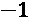
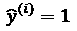
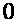
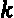

第三章:解读挑战
在本章中，我们将讨论用于回归和分类的机器学习解释的传统方法。这包括模型性能评估方法，如 RMSE、R 平方、AUC、ROC 曲线，以及从混淆矩阵中得出的许多指标。我们还将探索几种可用于解释目的的降维可视化技术。然后，我们将检查这些传统方法的局限性，并解释究竟是什么使“白盒”模型具有内在的可解释性，以及为什么我们不能总是使用白盒模型。为了回答这个问题，我们将考虑预测性能和模型可解释性之间的权衡。最后，我们将发现一些新的“玻璃盒子”模型，如 EBM 和 skope——试图在这种权衡中不妥协的规则。
以下是本章将涉及的主要主题:
- 回顾传统的模型解释方法
- 理解传统模型解释方法的局限性
- 研究本质上可解释的(白盒)模型
- 认识到性能和可解释性之间的权衡
- 发现新的可解释的(玻璃盒子)模型
技术要求
从 第 2 章 、可解释性的关键概念开始，我们使用自定义的mldatasets库来加载数据集。关于如何安装这个库的说明位于前言中。除了mldatasets，本章的例子还使用了pandas、numpy、sklearn、rulefit、cvae、interpret、statsmodels、matplotlib和skope-rules库。本章代码位于此处:https://github . com/packt publishing/Interpretable-Machine-Learning-with-Python/tree/master/chapter 03。
使命
想象一下，2019 年 1 月初，你是一名数据科学顾问，在德克萨斯州福斯沃思的一个会议室里。在这个会议室里，世界上最大的航空公司之一美国航空公司(AA) 的高管们正在向大家介绍他们的准点表现 ( OTP )。OTP 是被广泛接受的航班正点率的关键性能指标。它以在预定到达时间 15 分钟内到达的航班的百分比来衡量。原来 AA 连续 3 年 OTP 都做到了 80%多一点，已经可以接受了，比以前好很多，但是他们还是全球第九，北美第五。为了在明年的广告中吹嘘这一点，他们渴望至少在 2019 年取得北美第一，击败最大的竞争对手。
在财务方面，据估计，延误会给航空公司造成近 20 亿美元的损失，因此，即使将这一成本降低 25-35%，使其与竞争对手持平，也能节省可观的成本。据估计，由于数千万小时的损失，乘客也要付出同样多的代价。延误的减少会产生更快乐的顾客，这可能会导致门票销售的增加。
你的任务是创建模型，只预测国内航班的延误。他们希望从模型中获得以下内容:
- 了解 2018 年哪些因素对国内到达延误影响最大
- 以足够的精度预测航空公司在半空中造成的延误，以在 2019 年缓解其中的一些因素
但是并不是所有的延迟都是相等的。国际航空运输协会 ( 国际航空运输协会)有 80 多个延误代码，从 14 ( 超售、订票错误)到 75 ( 飞机除冰、除冰/除雪、防霜冻)。有些是可以预防的，有些是不可避免的。
航空公司高管告诉您，航空公司目前对预测由超出他们控制的事件(如极端天气、安全事件和空中交通管制问题)导致的延误不感兴趣。他们也对使用同一架飞机的先前航班的晚点造成的延误不感兴趣，因为这不是根本原因。然而，他们想知道繁忙的枢纽对可避免的延误的影响，即使这与拥堵有关，因为毕竟，他们可能在航班调度或飞行速度，甚至登机口选择方面有所作为。虽然他们理解国际航班偶尔会影响国内航班，但他们希望首先解决规模庞大的本地市场。
高管们已经向你提供了来自美国运输部运输统计局的 2018 年所有 AA 国内航班的数据集。
走近
经过仔细考虑，你决定把它作为一个回归问题和一个分类问题来处理。因此，您将生成预测延误分钟的模型，以及对航班是否延误超过 15 分钟进行分类的模型。对于口译来说，两者并用将使你能够使用更广泛的方法，并相应地扩展你的解释。此外，降维只能进一步丰富解释的可能性。因此，我们将通过采取以下步骤来处理这个示例:
- 用各种回归方法预测延误时间
- 用各种分类方法将航班分为延误或未延误
- 用降维方法可视化延误航班
回顾传统模型解释方法的部分的这些步骤之后是本章其余部分的结论。
准备工作
你可以在这里找到这个例子的代码:https://github . com/packt publishing/Interpretable-Machine-Learning-with-Python/blob/master/chapter 03/flight delays . ipynb。
加载库
若要运行此示例，您需要安装以下库:
mldatasets加载数据集pandas和numpy来操纵它sklearn(scikit-learn)、rulefit、cvae、statsmodels、interpret和skope-rules来拟合模型并计算性能指标matplotlib和seaborn创建可视化效果
加载这些库，如下面的代码片段所示:
import math import mldatasets import pandas as pd import numpy as np from sklearn.pipeline import make_pipeline from sklearn.preprocessing import PolynomialFeatures, StandardScaler from sklearn.model_selection import train_test_split from sklearn import metrics, linear_model, tree, naive_bayes,\ neighbors, ensemble, neural_network, svm, decomposition, manifold from rulefit import RuleFit import statsmodels.api as sm from interpret.glassbox import ExplainableBoostingClassifier from interpret import show from interpret.perf import ROC import matplotlib.pyplot as plt import seaborn as sns from cvae import cvae from skrules import SkopeRules
了解和准备数据
然后，我们加载数据，如下所示:
aad18_df = mldatasets.load("aa-domestic-delays-2018")
应该有近 90 万条记录，23 列。我们可以看一下这样加载的内容:
aad18_df.info()
以下是输出:
<class 'pandas.core.frame.DataFrame'>
RangeIndex: 899527 entries, 0 to 899526
Data columns (total 23 columns):
FL_NUM 899527 non-null int64
ORIGIN 899527 non-null object
DEST 899527 non-null object
PLANNED_DEP_DATETIME 899527 non-null object
CRS_DEP_TIME 899527 non-null int64
DEP_TIME 899527 non-null float64
DEP_DELAY 899527 non-null float64
DEP_AFPH 899527 non-null float64
DEP_RFPH 899527 non-null float64
TAXI_OUT 899527 non-null float64
WHEELS_OFF 899527 non-null float64
: : : :
WEATHER_DELAY 899527 non-null float64
NAS_DELAY 899527 non-null float64
SECURITY_DELAY 899527 non-null float64
LATE_AIRCRAFT_DELAY 899527 non-null float64
dtypes: float64(17), int64(3), object(3)
memory usage: 157.8+ MB
一切看起来都很有序，因为所有的列都在那里，并且没有空值。
数据字典
让我们检查一下数据字典。
一般特征如下:
FL_NUM:航班号ORIGIN:起始机场代码(IATA)DEST:目的地机场代码(IATA)
发车特点如下:
PLANNED_DEP_DATETIME:航班的计划日期和时间。CRS_DEP_TIME:计划出发时间。DEP_TIME:实际出发时间。DEP_AFPH:从始发机场计划起飞和实际起飞之间的时间间隔内，每小时实际飞行的次数(计入 30 分钟间隔)。该功能告诉您起飞时始发地机场有多繁忙。DEP_RFPH:每小时相对起飞航班数是每小时实际航班数与一年中某月某日某时始发机场每小时平均航班数之比。这个特写告诉你起飞时相对始发地机场有多忙。TAXI_OUT:从出发机场登机口出发到轮子关闭之间经过的时间。WHEELS_OFF:飞机轮子离开地面的时间点。
飞行中的特点如下:
CRS_ELAPSED_TIME:飞行行程所需的计划时间。PCT_ELAPSED_TIME:实际飞行时间与计划飞行时间之比，用以衡量飞机的相对速度。DISTANCE:两个机场之间的距离。
抵达特征:
CRS_ARR_TIME:计划到达时间。ARR_AFPH:在到达目的地机场的计划到达时间和实际到达时间之间的间隔内，每小时实际飞行的次数(计入 30 分钟的填充时间)。该功能告诉您目的地机场在着陆期间有多繁忙。ARR_RFPH:每小时到达相对航班数是每小时实际航班数与一年中某月某日某时在目的地机场发生的每小时航班数中位数的比率。该功能告诉您在着陆期间目的地机场相对有多繁忙。
延迟功能:
DEP_DELAY:离港总延误分钟。ARR_DELAY: The total delay on arrival in minutes can be subdivided into any or all of the following:a)
CARRIER_DELAY:因航空公司控制范围内的情况(例如，维护或机组人员问题、飞机清洁、行李装载、加油等)造成的分钟延误。b)
WEATHER_DELAY:重大气象条件(实际或预报)造成的分钟延误。c)
NAS_DELAY:国家航空系统规定的延迟分钟数，如非极端天气条件、机场运行、大交通量和空中交通管制。d)
SECURITY_DELAY:由于航站楼或中央大厅的疏散、由于安全漏洞、安检设备故障或安检区排长队超过 29 分钟而导致的飞机重新登机造成的分钟延误。e)
LATE_AIRCRAFT_DELAY:同一架飞机前一次航班晚点造成的分钟延误。
数据准备
首先，PLANNED_DEP_DATETIME必须是 datetime 数据类型:
aad18_df['PLANNED_DEP_DATETIME'] =\
pd.to_datetime(aad18_df['PLANNED_DEP_DATETIME'])
航班的确切日期和时间并不重要，但可能一周中的月份和日期很重要，因为天气和季节模式只能在这种粒度级别上得到理解。此外，高管们提到周末和冬天对延误尤其不利。因此，我们将为月份和星期几创建特征:
aad18_df['DEP_MONTH'] = aad18_df['PLANNED_DEP_DATETIME'].dt.month aad18_df['DEP_DOW'] = aad18_df['PLANNED_DEP_DATETIME'].dt.dayofweek
我们不需要PLANNED_DEP_DATETIME列，所以让我们像这样删除它:
aad18_df = aad18_df.drop(['PLANNED_DEP_DATETIME'], axis=1)
记录到达机场或目的地机场是否为枢纽机场至关重要。2019 年，AA 有 10 个枢纽:夏洛特，芝加哥-奥黑尔，达拉斯/沃斯堡，洛杉矶，迈阿密，纽约-JFK，纽约-拉瓜迪亚，费城，凤凰城-天空港，华盛顿-国家机场。因此，我们可以使用其 IATA 代码对哪些ORIGIN和DEST机场是 AA 枢纽机场进行编码，并去掉带有代码的列，因为它们太具体了(FL_NUM、ORIGIN和DEST):
#Create list with 10 hubs (with their IATA codes)
hubs = ['CLT', 'ORD', 'DFW', 'LAX', 'MIA', 'JFK', 'LGA', 'PHL',\
'PHX', 'DCA']
#Boolean series for if ORIGIN or DEST are hubs
is_origin_hub = aad18_df['ORIGIN'].isin(hubs)
is_dest_hub = aad18_df['DEST'].isin(hubs)
#Use boolean series to set ORIGIN_HUB and DEST_HUB
aad18_df['ORIGIN_HUB'] = 0
aad18_df.loc[is_origin_hub, 'ORIGIN_HUB'] = 1
aad18_df['DEST_HUB'] = 0
aad18_df.loc[is_dest_hub, 'DEST_HUB'] = 1
#Drop columns with codes
aad18_df = aad18_df.drop(['FL_NUM', 'ORIGIN', 'DEST'], axis=1)
在所有这些操作之后，我们有了相当数量的有用特性，但是我们还没有确定目标特性。有两列可以满足这个目的。我们有ARR_DELAY，这是不管什么原因延误的总分钟数，然后还有CARRIER_DELAY，这只是可以归因于航空公司的那些分钟的总数。例如，看看以下航班延误超过 15 分钟的例子(根据航空公司的定义，这被视为晚点):
aad18_df.loc[aad18_df['ARR_DELAY'] > 15,\
['ARR_DELAY','CARRIER_DELAY']].head(10)
前面的代码输出图 3.1 :
图 3.1–到达延迟超过 15 分钟的样本观察
在图 3.1 中的所有延误中，有一个(#26)根本不是航空公司的责任。其中四次是航空公司的部分责任(#8、#16、#33、#40)，两次是由于航空公司的原因而延误了 15 分钟以上(#8、#40)。其余的都是航空公司的错。我们可以看出，尽管总延误是有用的信息，但航空公司高管只对航空公司造成的延误感兴趣，因此ARR_DELAY可以被丢弃。此外，还有另一个更重要的原因应该放弃它，那就是如果手头的任务是预测延误，我们不能使用非常相同的延误(减去非航空公司原因的部分)来预测它。这就像用今天稍微编辑过的报纸来预测今天的新闻一样。出于同样的原因，最好移除ARR_DELAY:
aad18_df = aad18_df.drop(['ARR_DELAY'], axis=1)
最后，我们可以把目标特征单独作为y，其余的都作为X。在这之后，我们将y和X分成训练和测试数据集。请注意，目标特征(y)在回归中保持不变，因此我们将其分为y_train_reg和y_test_reg。然而，为了分类，我们必须将这些标签制成二进制版本，表示是否迟到超过 15 分钟，称为y_train_class和y_test_class。请注意，我们为再现性设置了固定的random_state:
rand = 9 y = aad18_df['CARRIER_DELAY'] X = aad18_df.drop(['CARRIER_DELAY'], axis=1).copy() X_train, X_test, y_train_reg, y_test_reg = train_test_split(X,\ y, test_size=0.15, random_state=rand) y_train_class = y_train_reg.apply(lambda x: 1 if x > 15 else 0) y_test_class = y_test_reg.apply(lambda x: 1 if x > 15 else 0)
为了检查特征与目标CARRIER_DELAY的线性相关程度，我们计算皮尔逊相关系数，将系数转化为绝对值(因为我们对它们是正相关还是负相关不感兴趣)，并按降序对它们进行排序:
corr = aad18_df.corr() abs(corr['CARRIER_DELAY']).sort_values(ascending=False)
从输出可以看出，只有一个特性(DEP_DELAY)高度相关。其他人不是:
CARRIER_DELAY 1.000000 DEP_DELAY 0.703935 ARR_RFPH 0.101742 LATE_AIRCRAFT_DELAY 0.083166 DEP_RFPH 0.058659 ARR_AFPH 0.035135 DEP_TIME 0.030941 NAS_DELAY 0.026792 : : WEATHER_DELAY 0.003002 SECURITY_DELAY 0.000460 Name: CARRIER_DELAY, dtype: float64
然而，这仅仅是线性相关，并且是一个接一个的。这并不意味着它们没有非线性关系，或者几个特征相互作用不会影响目标。在下一节中，我们将进一步讨论这一点。
回顾传统的模型解释方法
为了探索尽可能多的模型类别和解释方法，我们将使数据符合回归和分类模型以及降维方法。
用各种回归方法预测分钟延迟
为了比较和对比回归方法，我们将首先创建一个名为reg_models的字典。每个模型都有自己的字典和在model属性中创建它的函数。稍后将使用该结构来整齐地存储拟合的模型及其度量。本词典中的模型类被选择来代表几个模型族，并说明我们将在后面讨论的重要概念:
Reg_models = {
#Generalized Linear Models (GLMs)
'linear':{'model': linear_model.LinearRegression()},
'linear_poly':{'model':
make_pipeline(PolynomialFeatures(degree=2),
linear_model.LinearRegression(fit_intercept=False))
'linear_interact':{'model':
make_pipeline(PolynomialFeatures(interaction_only=True),
linear_model.LinearRegression(fit_intercept=False)) },
'ridge':{'model': linear_model.\
RidgeCV(alphas=[1e-3, 1e-2, 1e-1, 1]) },
#Trees
'decision_tree':{'model': tree.\
DecisionTreeRegressor(max_depth=7, random_state=rand)},
#RuleFit
'rulefit':{'model': RuleFit(max_rules=150, rfmode='regress',\
random_state=rand)},
#Nearest Neighbors
'knn':{'model': neighbors.KNeighborsRegressor(n_neighbors=7)},
#Ensemble Methods
'random_forest':{'model':ensemble.\
RandomForestRegressor(max_depth=7, random_state=rand)},
#Neural Networks
'mlp':{'model':neural_network.\
MLPRegressor(hidden_layer_sizes=(21,),\
max_iter=500, \
early_stopping=True,\
random_state=rand)}
}
在我们开始将数据拟合到这些模型之前，我们将逐一简要解释它们:
linear: 线性回归是我们讨论的第一个模型类。不管是好是坏，它对数据做了几个假设。其中最主要的假设是预测必须是 X 特征的线性组合。这自然限制了发现特征间非线性关系和相互作用的能力。linear_poly:degree=2，多项式次数为二，所以是二次。这意味着，除了所有的特性都是单项形式(例如，DEP_FPH)之外，它还有一个二次形式(例如，DEP_FPH2)，外加所有 21 个特性的许多交互项。换句话说，对于DEP_FPH，对于其余的特性，将会有交互术语，例如DEP_FPH ´ DISTANCE、DEP_FPH ´ DELAY等等。linear_interact:这就像interaction_only=True建议的那样。这很有用，因为没有理由相信我们的任何特征与二次项有更好的关系。然而，也许是与其他功能的交互产生了影响。ridge:RidgeCV)，测试几种正则化强度(alphas)。decision_tree: Amax_depth=7防止过度拟合，因为树越大，它就越适合我们的训练数据。rule_fit:max_rules=150)和属性rfmode='regress'告诉 RuleFit 这是一个回归问题，因为它也可以用于分类。与这里使用的所有其他模型不同，这不是一个 scikit-learn 模型，而是由 Christoph Molnar 根据一篇论文改编的。knn:n_neighbors=7所以。这是一个基于实例的机器学习模型，也被称为懒惰学习者，因为它只是存储训练数据。在推理过程中，它使用训练数据来计算与点的相似性，并基于此生成预测。这与基于模型的机器学习技术或渴望学习者所做的相反，后者是使用训练数据来学习公式、参数、系数或偏差/权重，然后在推理过程中利用这些数据进行预测。random_forest:想象一下，不是一个而是数百个决策树，根据特征的随机组合和数据的随机样本进行训练。max_depth=7。mlp:MLPRegressor默认使用 ReLU ，随机梯度下降，反向传播。在这种情况下，我们在第一个也是唯一的隐藏层中使用 21 个神经元，因此是hidden_layer_sizes=(21,)，运行 500 个时期的训练(max_iter=500，并且当验证分数没有提高时终止训练(early_stopping=True)。
如果您不熟悉这些型号，请不要担心！我们将在本章后面或本书后面更详细地介绍它们。另外，请注意，这些模型中的一些在某处有一个随机过程。为了确保再现性，我们设置了random_state。如果你努力总是设置它，这将是最好的，否则，它每次都会随机设置它，这将使你的结果很难重现。
现在，让我们迭代我们的模型字典(reg_models)，使它们适合训练数据，并基于这些预测的质量来预测和计算两个指标。然后，我们将在字典中保存拟合的模型、测试预测和指标，以备后用。注意，rulefit只有接受numpy数组，所以我们不能用同样的方式fit它。此外，请注意rulefit和mlp比其他训练时间更长，因此可能需要几分钟来运行:
For model_name in reg_models.keys():
if model_name != 'rulefit':
fitted_model = reg_models[model_name]['model'].\
fit(X_train, y_train_reg)
else:
fitted_model = reg_models[model_name]['model'].\
fit(X_train.values, y_train_reg.values, X_test.columns)
y_train_pred = fitted_model.predict(X_train.values)
y_test_pred = fitted_model.predict(X_test.values)
reg_models[model_name]['fitted'] = fitted_model
reg_models[model_name]['preds'] = y_test_pred
reg_models[model_name]['RMSE_train'] =\
math.sqrt(metrics.mean_squared_error(y_train_reg, y_train_pred))
reg_models[model_name]['RMSE_test'] =\
math.sqrt(metrics.mean_squared_error(y_test_reg, y_test_pred))
reg_models[model_name]['R2_test'] =\
metrics.r2_score(y_test_reg, y_test_pred)
我们现在可以将字典转换成一个DataFrame并以一种排序和颜色编码的方式显示指标:
reg_metrics = pd.DataFrame.from_dict(reg_models,\
'index')[['RMSE_train', 'RMSE_test', 'R2_test']]
reg_metrics.sort_values(by='RMSE_test').style.\
background_gradient(cmap='viridis', low=1, high=0.3,
subset=['RMSE_train', 'RMSE_test']).\
background_gradient(cmap='plasma', low=0.3, high=1,
subset=['R2_test'])
前面的代码输出图 3.2 。请注意，颜色编码并不适用于所有 Jupyter Notebook 实现:
图 3.2–我们模型的回归指标
为了解释图 3.2 中的指标，我们应该首先理解它们的含义，包括一般意义和回归练习的上下文:
random_forest，你需要调一些参数。在这种情况下，减少树的最大深度，增加树的数量(也称为knn，您可以调整，但是由于其懒惰学习者的本性，预计会在训练数据上表现过度。- 在任何情况下，这些数字都相当不错，因为即使是我们表现最差的模型也低于 10 的测试 RMSE，其中大约一半的测试 RMSE 低于 7.5，很可能平均有效地预测了延迟，因为延迟的阈值是 15 分钟。
请注意，linear_poly是第二大性能模型，linear_interact是第四大性能模型，显著领先于linear，这表明非线性和交互性是产生更好预测性能的重要因素。
- R2 : R 平方又称决定系数。它被定义为方差在 y (结果)目标中所占的比例，即可以用模型中的 X (预测)特征来解释。它回答了这样一个问题，模型解释的可变性占所有可变性的比例是多少？正如你可能从颜色编码中看出的，越多越好。我们的模型似乎包括重要的 X 特征，正如我们的皮尔逊相关系数所证明的那样。因此，如果这个 R2 值很低，也许添加额外的功能会有所帮助，比如飞行日志、终端条件，甚至航空公司高管说他们现在没有兴趣探索的那些东西，比如山寨效果和国际航班。这些可以填补无法解释的差异。
让我们看看我们是否能通过分类得到好的度量。
用各种分类方法将航班分为延误或未延误
正如我们对回归所做的那样，为了比较和对比分类方法，我们将首先为它们创建一个名为class_models的字典。每个模型都有自己的字典和在model属性中创建它的函数。这个结构将在稍后被用来整齐地存储拟合的模型及其度量。本词典中的模型类被选择来代表几个模型族，并阐明我们将在后面讨论的重要概念。其中一些方法看起来很熟悉，因为它们与回归中使用的方法相同，但应用于分类:
Class_models = {
#Generalized Linear Models (GLMs)
'logistic':{'model': linear_model.LogisticRegression()},
'ridge':{'model': linear_model.\
RidgeClassifierCV(cv=5,\
alphas=[1e-3, 1e-2, 1e-1, 1],\
class_weight='balanced')},|
#Tree
'decision_tree':{'model': tree.\
DecisionTreeClassifier(max_depth=7,\
random_state=rand)},
#Nearest Neighbors
'knn':{'model': neighbors.KNeighborsClassifier(n_neighbors=7)},
#Naive Bayes
'naive_bayes':{'model': naive_bayes.GaussianNB()},
#Ensemble Methods
'gradient_boosting':{'model':ensemble.\
GradientBoostingClassifier(n_estimators=210)},
'random_forest':{'model':ensemble.\
RandomForestClassifier(max_depth=11,\
class_weight='balanced', random_state=rand)},
#Neural Networks
'mlp':{'model': make_pipeline(StandardScaler(), neural_network. MLPClassifier(hidden_layer_sizes=(7,),\
max_iter=500, early_ stopping=True,\
random_state=rand))}
}
在我们开始将数据拟合到这些模型之前，我们将逐一简要解释它们:
logistic: 逻辑回归介绍于 第二章 ，可解释性的关键概念。它和线性回归有许多相同的优点和缺点。例如，必须手动添加特征交互。像其他分类模型一样，它返回 0 和 1 之间的概率，当接近 1 时，表示可能与正类匹配，而当接近 0 时，表示不可能与正类匹配，因此可能与负类匹配。自然，0.5 是用来决定类之间的阈值，但也不一定是。正如我们将在本书后面讨论的，调整阈值有解释和性能方面的原因。请注意，这是一个二元分类问题，因此我们只在延迟(正)和不延迟(负)之间进行选择，但是这种方法可以扩展到多类分类。然后将称为多项分类。ridge:RidgeCV对于回归，RidgeClassifierCV使用留一交叉验证，这意味着它首先将数据分成不同的大小相等的集合——在这种情况下，我们使用五个集合(cv=5)——然后一次删除一个特征，以查看没有它们时模型的表现如何，平均所有五个集合。那些没有太大差别的特征被罚测试几个正则化强度(alphas)以找到最佳的强度。与所有的正则化技术一样，重点是阻止从不必要的复杂性中学习，最小化不太突出的特性的影响。decision_tree:一个“香草”决策树，比如这个，也被称为 CART(分类和回归树)，因为它可以用于回归或者分类任务。这两个任务有相同的架构，但是功能略有不同，比如用来决定在哪里“分割”一个分支的算法。在这种情况下，我们只允许树的深度为 7。knn:n_neighbors)。naive_bayes: 高斯朴素贝叶斯是朴素贝叶斯分类器家族的一部分，这些分类器之所以被称为朴素贝叶斯，是因为它们做出一些假设，即特征是相互独立的，但通常情况并非如此。这极大地阻碍了它的预测能力，除非假设是正确的。它被称为贝叶斯，因为它基于贝叶斯条件概率定理，即一个类的条件概率是类概率乘以给定类的特征概率。高斯朴素贝叶斯做了一个额外的假设，即连续值具有正态分布，也称为高斯分布。gradient_boosting:像n_estimators=210。random_forest:与回归相同的随机森林，除了它使用分类决策树而不是回归树。mlp:相同的hidden_layer_sizes=(7,))，因为二进制分类往往需要更少的二进制分类来实现最佳结果。
请注意，其中一些模型对类别使用平衡权重(class_weight='balanced')，这非常重要，因为这恰好是一个不平衡分类任务。我们的意思是消极阶层的人数远远超过积极阶层。您可以看到我们的训练数据是这样的:
y_train_class[y_train_class==1].shape[0] / y_train_class.shape[0]
以下是输出:
0.061283264255549
如您所见，我们训练数据的正类中的输出仅占总数的 6%。考虑到这一点的模型将获得更公平的结果。解决类不平衡有不同的方法，我们将在第 11 章、偏差缓解和因果推断方法中进一步详细讨论，但class_weight='balanced'应用了与类频率成反比的权重，使数量超过的正类更胜一筹。
训练和评估分类模型
现在，让我们迭代我们的模型字典(class_models)，使它们适合训练数据，预测概率和类，除了ridge，它不输出概率。然后，我们将根据这些预测的质量计算五个指标。最后，我们将把拟合的模型、测试预测和指标保存在字典中，以备后用。您可以在运行下一段代码时喝杯咖啡，因为sklearn的gradient_boosting比其他代码需要更长的时间来训练，所以这可能需要几分钟来运行:
For model_name in class_models.keys():
fitted_model = class_models[model_name]['model'].\
fit(X_train, y_train_class)
y_train_pred = fitted_model.predict(X_train.values)
if model_name == 'ridge':
y_test_pred = fitted_model.predict(X_test.values)
else:
y_test_prob = fitted_model.predict_proba(X_test.values)[:,1]
y_test_pred = np.where(y_test_prob > 0.5, 1, 0)
class_models[model_name]['fitted'] = fitted_model
class_models[model_name]['probs'] = y_test_prob
class_models[model_name]['preds'] = y_test_pred
class_models[model_name]['Accuracy_train'] =\
metrics.accuracy_score(y_train_class, y_train_pred)
class_models[model_name]['Accuracy_test'] =\
metrics.accuracy_score(y_test_class, y_test_pred)
class_models[model_name]['Recall_train'] =\
metrics.recall_score(y_train_class, y_train_pred)
class_models[model_name]['Recall_test'] =\
metrics.recall_score(y_test_class, y_test_pred)
if model_name != 'ridge':
class_models[model_name]['ROC_AUC_test'] =\
metrics.roc_auc_score(y_test_class, y_test_prob)
else:
class_models[model_name]['ROC_AUC_test'] = 0
class_models[model_name]['F1_test'] =\
metrics.f1_score(y_test_class, y_test_pred)
class_models[model_name]['MCC_test'] =\
metrics.matthews_corrcoef(y_test_class, y_test_pred)
我们现在可以将字典转换为DataFrame并以排序和颜色编码的方式显示指标:
class_metrics = pd.DataFrame.from_dict(class_models,\
'index')[['Accuracy_train', 'Accuracy_test',\
'Recall_train', 'Recall_test',\
'ROC_AUC_test', 'F1_test', 'MCC_test']]
class_metrics.sort_values(by='ROC_AUC_test', ascending=False).\
style.background_gradient(cmap='plasma', low=0.3, high=1,
subset=['Accuracy_train', 'Accuracy_test']).\
background_gradient(cmap='viridis', low=1, high=0.3,\
subset=['Recall_train', 'Recall_test',\
'ROC_AUC_test', 'F1_test', 'MCC_test'])
前面的代码输出图 3.3 :
图 3.3–我们模型的分类标准
为了解释图 3.3 中的指标，我们应该首先理解它们的含义，包括一般含义和分类练习的上下文:
- 准确度:准确度是衡量分类任务有效性最简单的方式，它是正确的预测占所有预测的百分比。换句话说，在二进制分类任务中，您可以通过将真阳性(TPs) 和真阴性(TNs) 的数量相加，并将它们除以所有预测的计数来计算。与回归度量一样，您可以测量训练和测试的准确性来衡量过度拟合。
- 回忆:尽管准确度听起来像是一个很好的指标，但在这种情况下回忆要好得多，原因是你可以有 94%的准确度，这听起来很好，但结果是你总是预测没有延迟！换句话说，即使你得到了很高的准确度，除非你对最少代表的类，延迟，进行准确的预测，否则这是没有意义的。我们可以用 recall(也称灵敏度或真阳性率找到这个数字，也就是 TP / TP + FN ，可以解释为返回了多少相关结果。换句话说，在这种情况下，预测的实际延迟的百分比是多少。另一个涉及真阳性的好指标是精度，这是我们预测样本的相关程度，也就是 TP / TP + FP。在这种情况下，将是实际延迟占预测延迟的百分比。对于不平衡的类，建议两者都用，但是根据你对的偏好而不是
 ，你会更喜欢召回而不是精确，反之亦然。
，你会更喜欢召回而不是精确，反之亦然。 - ROC-AUC: ROC is an acronym for Receiver Operating Characteristic and was designed to separate signal from noise. What it does is plot the proportion of true positive rate (Recall) on the x axis and the false positive rate on the y axis. AUC stands for area under the curve, which is a number between and that assesses the prediction ability of the classifier being perfect, being as good as a coin toss, and anything lower meaning that if we inverted the results of our prediction, we would have a better prediction. To illustrate this, let's generate a ROC curve for our worse-performing model, Naïve Bayes, according to the AUC metric:
plt.tick_params(axis = 'both', which = 'major',\ labelsize = 12) fpr, tpr, _ = metrics.roc_curve(y_test_class, class_models['naive_bayes']['probs']) plt.plot(fpr, tpr, label='ROC curve (area = %0.2f)' %\ class_models['naive_bayes']['ROC_AUC_test']) plt.plot([0, 1], [0, 1], 'k–') #coin toss line plt.xlabel('False Positive Rate', fontsize = 14) plt.ylabel('True Positive Rate', fontsize = 14) plt.xlim([0.0, 1.0]) plt.ylim([0.0, 1.0]) plt.legend(loc="lower right")前面的代码输出图 3.4 。注意对角线表示一半的面积。换句话说，它具有抛硬币般的预测品质的点:
图 3.4–朴素贝叶斯的 ROC 曲线
- F1:F1-score也叫精度和召回的调和平均值，因为它是这样计算的:2TP / 2TP + FP + FN。由于它同时包括精确度和召回率指标，这与真阳性的比例有关，所以当数据集不平衡，并且您不喜欢精确度或召回率时，它是一个很好的指标选择。
- MCC:马修斯相关系数是从生物统计学中提取的一个指标。它在更广泛的数据科学社区中越来越受欢迎，因为它有能力公平地产生考虑到 TP 、 FN 、 TN 和 FP 的高分，因为它考虑了类的比例。这使得它最适合不平衡的分类任务。与目前使用的所有其他指标不同，它的范围不是从 0 到 1，而是-1，完全不同意，到 1，预测和实际之间完全一致。中点 0 相当于随机预测。
我们的分类指标大多非常好，超过 96%的准确率和 75%的召回率。然而，即使回忆也不是一切。例如，RandomForest由于其类别与权重的平衡，获得了最高的召回率，但在 F1 和 MCC 中表现不佳，这表明精度不是很好。
山脊分类也有同样的设置，而且的 F1 分数如此之低，精度一定很差。这并不意味着这种加权技术本身就是错误的，但它通常需要更多的控制。这本书将涵盖在公平性和准确性、准确性和可靠性、可靠性和有效性之间实现正确平衡的技术。这是一个需要许多度量和可视化的平衡行为。从这个练习中得到的一个关键信息应该是单一指标不会告诉你整个故事，解释是关于讲述最相关和足够完整的故事。
现在，为了完成这个故事，我们将尝试一些降维方法。
用降维方法可视化延误航班
就此而言，视觉化和解释并不总是处理有形的事物。通过机器学习，我们经常处理特征之间的潜在关系，鉴于它们的复杂性，很难找到，甚至更难描述或可视化。降低可视化复杂性的一个有效方法是通过降维方法，这有助于提取表征，尽管缺乏可辨别的名称，但可能有一些可识别的见解，我们可以从中获得意义。
为了比较和对比降维方法，我们将首先为它们创建一个名为dimred_methods的字典。每个方法都有自己的字典和在method属性中创建它的函数。该结构将在以后用于存储精简后的数据，或者在cvae的情况下，存储拟合模型。本词典中的方法被选择来代表几个方法家族，以说明我们将在后面讨论的重要概念。
考虑到其中一些方法潜在的资源密集型本质，我们对训练(X_train_abbrev)和测试(X_test_abbrev)都使用了我们的数据集的一个缩减的九列版本。我们还使用随机生成的索引(sample_idx)只对 10%的测试数据集进行了采样。这只是一个numpy数组，告诉我们哪些观察值是随机选择的。如果您有更多的资源可以使用，请随意将sample_size更改为更大的百分比:
X_train_abbrev = X_train.iloc[:,[0, 1, 2, 4, 8, 9, 11, 17, 20]]
X_test_abbrev = X_test.iloc[:,[0, 1, 2, 4, 8, 9, 11, 17, 20]]
np.random.seed(rand)
sample_size = 0.1
sample_idx = np.random.choice(X_test.shape[0],\
math.ceil(X_test.shape[0]*sample_size), replace=False)
dimred_methods = {
#Decomposition
'pca':{'method': decomposition.PCA(n_components=3,\
random_state=rand)},
#Manifold Learning
't-sne':{'method': manifold.TSNE(n_components=3,\
random_state=rand)},
#Variational Autoencoders
'vae':{'method': cvae.CompressionVAE(X_train_abbrev.values,\
dim_latent=3, tb_logging=False)}
}
在我们开始将这些方法应用于我们的数据之前，我们将逐一简要解释它们:
pca: 主成分分析 ( PCA )是最古老的降维技术之一，通常通过对数据的协方差矩阵进行特征值分解来完成。不像我们在这里探索的其他，它的计算速度很快。特征值分解的过程找到正交向量，这意味着在几何上它们相距甚远。这是为了使 PCA 能够将维度减少到彼此不相关的维度。它的名字是指主成分，因为特征向量也被称为主方向。这是有意义的,因为通过将数据投影到更少的维度来减少数据，同时试图不丢失信息，所以它假设方差最大的方向是最重要的。t-sne: T 分布随机邻居嵌入 ( t-SNE )是一种较新的降维方法，与 PCA 不同，它是非线性的，因此它擅长捕捉非线性。也不同于 PCA，t-SNE 背后的数学理论不是线性代数而是概率。它使用 Kullback-Leibler 散度(这是一种距离度量)来最小化高维(我们的输入数据)和低维表示之间的成对分布相似性之间的差异。与主成分分析不同，主成分分析的重点是将不同的点放得尽可能远， t-SNE 是将相似的点放在一起。vae: 变分自动编码器 ( VAEs )是一种深度学习方法，学习如何从高维度对数据进行最佳编码，然后从低维度解码回高维度。因为它对神经网络使用线性代数，并测量概率分布之间的 Kullback-Leibler 散度，所以它具有来自 PCA 和 t-SNE 的元素。当然，很多方面都不一样。虽然 VAE 最小化了原始数据和重建数据之间的重建误差，但它不像 t-SNE 那样在粒度级别上保留相似点之间的距离。与 PCA 和 t-SNE 不同，VAE 提供了低维和高维之间的可逆性，甚至可以生成新的数据。
请注意，对于所有方法，我们将数据减少到三个n_components=3或dim_latent=3。此外，vae不仅仅是一种降维方法，而是一个机器学习模型类，因此它将首先对数据进行训练。因此，与其他的不同，我们将使用简化的训练数据X_train_abbrev来达到这个效果。
现在，让我们遍历我们的方法字典(dimred_methods)并对每种方法进行降维。在vae的情况下，也会有合身的型号。最后，我们将简化的数据和适合vae的模型保存在字典中以备后用。其中两种方法各需要几分钟的时间，所以如果需要一段时间也不用担心:
For method_name in dimred_methods.keys():
if method_name != 'vae':
lowdim_data = dimred_methods[method_name]['method'].\
fit_transform(X_test_abbrev.values[sample_idx])
else:
fitted_model = dimred_methods[method_name]['method'].train()
lowdim_data = fitted_model.\
embed(X_test_abbrev.values[sample_idx])
dimred_methods[method_name]['fitted'] = fitted_model
dimred_methods[method_name]['lowdim'] = lowdim_data
那么，我们能利用现有的低维数据做些什么呢？首先，我们可以把它形象化！
因此，我们可以做的一个简洁的可视化是绘制三维——让我们称它们为 x、y 和 z——一次两个维度，同时我们用不同的颜色显示我们的分类。这就像从不同的角度(顶部、侧面和前面)看三维一样。为此，我们将利用一个名为plot_3dim_decomposition的绘图函数，它获取我们的低维数据并绘制其三维图，同时对其进行颜色编码y_labels。最初，我们的标签可以是我们实际的(编码 0 表示没有延迟，编码 1 表示延迟)，但是为了使它能够显示图例，我们还将包括y_names，它是一个帮助翻译图图例中这些内容的字典:
Y_names = {0:'Not Delayed', 1:'Delayed'}
现在让我们根据采样的y_test_class绘制 PCA 的低维数据:
mldatasets.plot_3dim_decomposition(dimred_methods['pca']['lowdim'], y_test_class.values[sample_idx], y_names)
在图 3.5 中，您可以看出延迟与未延迟在某些部分是可分离的，这在比较某些尺寸时比其他尺寸更清楚:
图 3.5–三种成分的主成分分析，一次绘制两个维度，并对标签进行颜色编码
我们为 SNE 霸王龙和 VAE 做同样的事情怎么样？
mldatasets.\
plot_3dim_decomposition(dimred_methods['t-sne']['lowdim'], y_test_class.values[sample_idx], y_names)
mldatasets.plot_3dim_decomposition(dimred_methods['vae']['lowdim'], y_test_class.values[sample_idx], y_names)
前面的代码分别输出 t-SNE 和 VAE 的图 3.6 和图 3.7 :
图 3.6–t 型 SNE，一次绘制两个维度的三个组成部分，并用颜色标记标签
图 3.7–VAE，一次绘制两个维度的三维图，并对标签进行颜色编码
t-SNE ( 图 3.6 )非常密集，但您仍然会发现延迟普遍存在的集群，而对于 VAE ( 图 3.7 )，更难识别集群，尤其是在大多数紫色集中的区域。从这些初始步骤中可以看出，这些技术可用于确定您的班级最集中的区域。但这就是全部吗？
有许多方法可以利用降维。有些是完全可视化的，有些可以扩展，以增强特性选择和工程、异常检测，甚至可以使用它来理解中间步骤的建模。
但是坚持使用可视化，现在，你甚至可以用它来调试模型。例如，如果不是显示实际的二进制类，而是显示分类错误( FP，FN )或缺少分类错误( TP，TN )，对于您的每个观察值，您可以直观地看到特定模型的大多数错误位于何处。为此，我们将使用一个名为encode_classification_error_vector的函数，它获取我们的实际值和模型预测值，并返回分类错误数组(error_vector)。还有，其对应的字典为剧情传说error_labels。然后我们可以将它插入到同一个plot_3dim_decomposition函数中。我们可以利用这一点来可视化我们之前拟合的岭分类器的分类误差，它是我们表现最差的分类器之一:
Y_test_class_samp = y_test_class.values[sample_idx]
y_test_pred_samp = class_models['ridge']['preds'][sample_idx]
error_vector, error_labels =\
encode_classification_error_vector(y_test_class_samp,\
y_test_pred_samp)
现在，我们可以使用所有三种降维方法来可视化这些分类错误:
mldatasets.plot_3dim_decomposition(dimred_methods['pca']['lowdim'], error_vector, error_labels)
mldatasets.\
plot_3dim_decomposition(dimred_methods['t-sne']['lowdim'],\
error_vector, error_labels)
mldatasets.plot_3dim_decomposition(dimred_methods['vae']['lowdim'], error_vector, error_labels)
前面的代码输出图 3.8 :

图 3.8–主成分分析、t-SNE 和 VAE，每个都有三个成分，一次绘制两个维度，并以颜色标记分类错误
在图 3.8 中，对于所有三种降维技术，您可以识别 FPs 和 FNs 占优势的“薄弱”区域。您可以深入挖掘这些领域，尝试不同的降维功能组合，看看是否有所不同，甚至对您的功能进行一些转换。如果你发现三维缺乏表现模式的表现力，尝试更多的维度。这里有很多值得探索的地方。
如果降维技术抓住了数据集的本质，为什么不在其上进行训练呢？在某些情况下，这样做是有意义的，但 x、y、z 缺乏内在意义，意义对于解释是不可或缺的。但是你可以在你的模型被错误分类的集群中找到意义，这可以扩展到你所有的模型。事实上，你可以问并回答这样一个问题:我所有的模型在哪里都有 FPs 或 fn？您可以找到发生这种情况的集群，并将这些见解整合到您的模型中。
当使用可视化来检查模型时，决策并不局限于降维方法。一些模型类很容易可视化，我们将在本章后面讨论。
现在，让我们检查一下我们一直在实践的传统方法的一些局限性。
理解传统模型解释方法的局限性
简而言之，传统的解释方法只涵盖关于您的模型的表面问题，例如:
- 总的来说，他们表现好吗？
- 超参数的哪些变化可能会影响预测性能？
- 你能在这些特征和它们的预测性能之间找到什么样的潜在模式？
如果你不仅想知道你的模型是否有效，还想知道为什么会有效，如何有效，这些问题就非常有限了。
这种理解上的差距可能会导致您的模型出现意想不到的问题，这些问题不一定会立即显现出来。让我们考虑一下，模型一旦部署，就不是静态的，而是动态的。他们面临的挑战与你在“实验室”训练他们时不同。他们可能不仅面临性能问题，还面临偏见问题，如代表不足的阶层的不平衡，或对抗性攻击的安全性。意识到这些特性在现实环境中已经发生了变化，我们可能不得不添加新的特性，而不仅仅是用相同的特性集进行重新训练。如果你的模型做出了一些令人不安的假设，你可能不得不重新检查整个管道。但是你如何首先认识到这些问题的存在呢？这时，您将需要一套全新的解释工具来帮助您更深入地挖掘，并回答有关您的模型的更具体的问题。这些工具提供了能够真正说明公平、问责和透明(FAT) 的解释，我们在 第 1 章 、解释、可解释性和可解释性中讨论了这些解释；为什么这些都很重要？
研究本质上可解释的(白盒)模型
到目前为止，在这一章中，我们已经将我们的训练数据拟合到代表每个“白盒”模型族的模型类中。这一部分的目的是向你展示为什么它们是内在可解释的。我们将通过使用先前安装的模型来实现这一点。
广义线性模型
glm 是一个庞大的模型类家族，每个统计分布都有一个模型。就像线性回归假设你的目标特征和残差具有正态分布一样，逻辑回归假设伯努利分布。每个分布都有 glm，比如泊松分布的泊松回归和多项式分布的多项式响应。您可以根据目标变量的分布以及您的数据是否满足 GLM 的其他假设(这些假设各不相同)来选择使用哪个 GLM。除了潜在的分布之外，将 glm 联系在一起成为一个单一家族的原因是它们都有一个线性预测值。换句话说， ŷ 目标变量(或预测值)在数学上可以表示为 X 特征的加权和，其中权重称为 b 系数。这是所有 glm 共享的简单公式，即线性预测函数:
然而，尽管它们使用相同的公式，但它们各自具有不同的关联函数，这提供了线性预测函数和 GLM 统计分布均值之间的关联。这会给生成的模型公式增加一些非线性，同时保留 b 系数和 X 输入数据之间的线性组合，这可能是混淆的来源。因为线性组合，它还是线性的。
特定的 GLMs 也有许多变化。例如，多项式回归是线性回归的特征多项式，而岭回归是线性回归的 L2 正则化。我们不会在这一节中涵盖所有 glm，因为在本章的例子中不需要它们，但是它们都有看似合理的用例。
顺便提一下，还有一个类似的概念叫做广义加性模型(gam)，这是一种不需要特征和系数的线性组合的广义加性模型，相反保留了加法部分，但对特征应用了任意函数。游戏也是可解释的，但它们并不常见，通常是根据特定的用例特别定制的。
线性回归
在 第一章 ，解释，可解释性，可说明性，为什么这些都很重要？，我们介绍了简单线性回归的公式，它只有一个 X 特征。多元线性回归将此扩展为具有任意数量的特征，因此不是:
它可以是:
具有特性，其中是截距，
由于线性代数，这可以是一个简单的矩阵乘法，如果:
用于得出最佳 b 系数、 OLS 的方法已被充分研究和理解。此外，除了系数之外，您还可以提取每个系数的置信区间。模型的正确性取决于输入数据是否满足假设:线性，正态性，独立性，(大部分)缺乏多重共线性，以及同方差。到目前为止，我们已经讨论了相当多的线性度，因此我们将简要说明其余部分:
- 正态性是每个特征正态分布的性质。这可以通过 Q-Q 图、直方图或 Kolmogorov-Smirnov 测试进行测试，非正态性可以通过非线性变换进行校正。如果一个特征不是正态分布的，它将使它的系数置信区间无效。
- 独立性是指当你的观察值(数据集中的行)相互独立时，就像不同且不相关的事件。如果你的观察不是独立的，它会影响你对结果的解释。在这一章的例子中，如果你有关于同一航班的多行，这可能违反这个假设，并使结果难以理解。这可以通过寻找重复的航班号来测试。
- 缺少多重共线性是可取的，因为否则，您会得到不准确的系数。当要素彼此高度相关时，会出现多重共线性。这可以用相关矩阵、公差测量或方差膨胀因子 ( VIF )来测试，并且可以通过移除每个高度相关的特征中的一个来修复。
- 同质性在 第一章 、解释、可解释性、可说明性中有简要论述；为什么这些都很重要？当残差(误差)在回归线上或多或少相等时。这可以通过 Goldfeld-Quandt 测试进行测试，异方差性(缺少同方差性)可以通过非线性变换进行校正。这一假设在实践中经常被违反。
即使我们没有在本章的例子中这样做，如果你要严重依赖线性回归，在你开始将数据拟合到线性回归模型之前测试这些假设总是好的。这本书不会详细说明这是如何做到的，因为它更多的是关于模型不可知和深度学习的解释方法，而不是深入研究如何满足特定类别模型的假设，如正态性和同态性。然而，我们在 第二章 、可解释性的关键概念中涵盖了最有利于解释的特征，我们将继续寻找这些特征:非线性、非单调性和交互性。我们之所以这样做，主要是因为不管用于进行预测的建模类是什么，要素之间的线性和相关性仍然是相关的。这些特性可以很容易地在用于线性回归的方法中进行测试。
解释
那么我们如何解释一个线性回归模型呢？轻松点。只要得到系数和截距。我们的 scikit-learn 模型在拟合模型中嵌入了这些属性:
coefs_lm = reg_models['linear']['fitted'].coef_
intercept_lm = reg_models['linear']['fitted'].intercept_
print('coefficients:%s' % coefs_lm)
print('intercept:%s' % intercept_lm)
上述代码输出以下内容:
coefficients: [ 4.54955677e-03 -5.25032459e-03 8.94123625e-01 1.25274473e-01 -6.46799581e-04 ...] intercept: -37.860211953237275
现在你知道这个公式了，它看起来像这样:
= -37.86 + 0.0045X1 + -0.0053X2 + 0.894X3 + ...
这个公式应该为如何从整体上解释这个模型提供一些直觉。对于多元线性回归，可以解释模型中的每个系数，就像我们在 第 1 章 中对简单线性回归示例所做的那样，解释、可解释性和可说明性；为什么这些都很重要？。这些系数充当权重，但它们也讲述了一个因要素类型而异的故事。为了使解释更易于管理，让我们将系数放在每个特性名称旁边的DataFrame中:
coef_df = pd.DataFrame({'feature':X_train.columns.values.tolist(), 'coef': coefs_lm})
coef_df
前面的代码产生了图 3.9 中的数据帧:

图 3.9–线性回归特征的系数
以下是如何使用图 3.9 中的系数解释特征:
ARR_RFPH，你知道每增加一个单位(每小时相对航班数)，就增加预测延误 0.373844 分钟，如果所有其他特性保持不变。ORIGIN_HUB你知道始发地机场是不是枢纽的区别是用系数-1.029088 来表示的。换句话说，因为它是一个负数，所以始发地机场是一个枢纽。如果所有其他功能保持不变，它会将延迟减少 1 分多钟。DEP_MONTH和DEP_DOW分别是 1-12 和 0-6 的整数。如果它们被视为序数，由于线性回归的线性性质，我们假设月份的增加或减少对结果有影响。一周中的每一天都是如此。但是影响很小。如果我们将它们视为虚拟或一次性编码特征，我们就可以测量星期五是否比星期六和星期三，或者七月比十月和六月更容易出现运营商延迟。这不可能用它们的顺序来建模，因为它们和这个顺序没有关系(是的，它是非线性的！).- 所以，比方说，我们有一个功能叫做
DEP_FRIDAY，另一个叫做DEP_JULY。它们被视为二元特征，可以精确地告诉你周五或七月的偏离对模型有什么影响。一些特征被故意保持为有序或连续的，尽管它们是分类的良好候选，以证明不对特征进行正确的调整会如何影响模型解释的表达能力。如果能告诉航空公司高管更多关于起飞日期和时间如何影响延误的信息，那就好了。此外，在某些情况下——不是在这种情况下——像这样的疏忽会严重影响线性回归模型的性能。
截距(-37.86)不是一个特征，但它有一个意义，那就是如果所有特征都在，预测会是什么？实际上，这种情况不会发生，除非你的特征碰巧都有合理的理由成为。正如 第一章 ，解释，可解释性，可说明性；为什么这些都很重要？你不会期望任何人有的高度，在这个例子中，你不会期望一个航班有的距离。但是，如果您对特征进行了标准化，使它们具有平均值，那么如果所有特征都是它们的平均值，那么您会将截距的解释更改为您所期望的预测。
特征重要性
这些系数也可用于计算特征重要性。不幸的是，scikit-learn 的线性回归器无法做到这一点，因为它不输出系数的标准误差。根据它们的重要性，对特征进行排序所需要的就是将除以它们相应的标准误差。这个结果被称为 t 统计量:
然后取这个的绝对值，从高到低排序。这很容易计算，但是你需要标准误差。您可以使用截距和 scikit-learn 返回的系数对所涉及的线性代数进行逆向工程来检索它。然而，再次拟合线性回归模型可能要容易得多，但这次使用的是statsmodels库，其中有所有统计数据的摘要，包括！顺便说一下，statsmodels将其线性回归变量命名为OLS，这很有意义，因为 OLS 是拟合数据的数学方法的名称:
linreg_mdl = sm.OLS(y_train_reg, sm.add_constant(X_train)) linreg_mdl = linreg_mdl.fit() linreg_mdl.summary()
前面的代码产生了图 3.10 :
图 3.10–统计模型线性回归汇总
从图 3.10 中的总结可以看出，有很多东西需要解开。这本书不会解决这里的所有问题，除了ARR_AFPH)具有唯一大于 0.05 的 p 值。此将此特征置于不显著水平，因为根据这种假设检验方法，低于 0.05 的一切都具有统计显著性。
因此，为了对我们的特性进行排序，让我们从statsmodels摘要中提取数据帧。然后，我们去掉const(截距)，因为这不是一个特性。我们需要特性的名称来理解它，所以我们将这个特性数组转换成它的数据帧。然后，我们用summary数据帧对concat数据帧进行names处理。最后，我们用 t 统计量的绝对值创建一个新列，并对其进行相应的排序。为了演示 t 统计量的绝对值和 p 值是如何反向相关的，我们还对这些列进行了颜色编码:
summary_df = linreg_mdl.summary2().tables[1]
summary_df = summary_df.drop(['const']).reset_index().\
rename(columns={'index':'feature'})
summary_df['t_abs'] = abs(summary_df['t'])
summary_df.sort_values(by='t_abs', ascending=False).style.\
background_gradient(cmap='plasma_r', low=0, high=0.1,\
subset=['P>|t|']).\
background_gradient(cmap='plasma_r', low=0, high=0.1,\
subset=['t_abs'])
前面的代码输出图 3.11 :
图 3.11–按 t 统计绝对值排序的线性回归汇总表
关于图 3.11 中的特征重要性，有一点特别有趣，那就是不同类型的延迟占据了前六位中的 5 位。当然，这可能是因为线性回归混淆了不同的非线性效应，或者这里有我们应该进一步研究的东西。尤其是“警告部分下的statsmodels总结提醒:
这很奇怪。保持这种想法。我们稍后将进一步研究这一点。
里脊回归
岭回归是惩罚或规则化回归以及 LASSO 和 ElasticNet 之类的子家族的一部分，因为正如本章前面所解释的，它使用 L2 范数进行惩罚。这个子家族也被称为稀疏线性模型，因为由于正则化，它通过使不相关的特征变得不相关来去除一些噪声。稀疏性在这个上下文中意味着少即是多，因为降低复杂性将导致更低的方差和改进的泛化。
为了说明这个概念，请看我们为线性回归输出的特征重要性表(图 3.11 )。有一点应该是显而易见的，那就是t_abs列是如何以不同的颜色开始每一行，然后一整行都是相同的黄色阴影。由于置信区间的变化，绝对 t 值不是你可以按比例得出的，你可以说你最重要的特征比你最不重要的 10 个特征都重要几百倍。然而，它应该指出有比其他特征重要得多的特征，以至于不相关，甚至可能混淆，从而产生噪声。有大量的研究表明，一小部分特征会对模型的结果产生最大的影响。这叫做赌稀疏原则。无论您的数据是否真实，通过应用正则化来测试理论总是有好处的，尤其是在数据非常宽(许多要素)或呈现多重共线性的情况下。这些正则化的回归技术可以合并到特性选择过程中，或者告知您对哪些特性是必要的理解。
有一种使岭回归适应分类问题的技术。之前简单讨论过。它将标签转换为-1 到 1 的标度，用于训练以预测和之间的值，然后将它们转换回 0-1 标度。但是，它使用正则化线性回归来拟合数据，并且可以以相同的方式进行解释。
解释
无论是全局还是局部，岭回归都可以用与线性回归相同的方式来解释，因为一旦模型被拟合，就没有区别了。公式是一样的:
除了系数不同，因为它们被一个参数惩罚，该参数控制应用多少收缩(也称为惩罚)。
我们可以通过从拟合模型中提取岭系数，并将它们与线性回归的系数并排放置在DataFrame中，来快速比较系数:
coefs_ridge = reg_models['ridge']['fitted'].coef_
coef_ridge_df =
pd.DataFrame({'feature':X_train.columns.values.tolist(), 'coef_linear': coefs_lm, 'coef_ridge': coefs_ridge})
coef_ridge_df.style.\
background_gradient(cmap='viridis_r', low=0.3, high=0.2, axis=1)
正如您在前面代码输出的图 3.12 中所看到的，系数总是略有不同，但有时较低，有时较高:
图 3.12–线性回归系数与岭回归系数的比较
我们没有保存岭回归交叉验证认为最佳的λ参数(scikit-learn 称之为 alpha )。然而，我们可以自己运行一个小实验来找出哪个参数是最好的。我们通过迭代 100(1)到 1013(10，000，000，000，000)之间的 100 个可能的 alpha 值，将数据拟合到每个 alpha 的岭模型，然后将系数附加到一个数组。我们在数组中排除一个系数，只是因为它比其他系数大得多，这将使收缩的影响更加难以可视化:
num_alphas = 100
alphas = np.logspace(0, 13, num_alphas)
alphas_coefs = []
for alpha in alphas:
ridge = linear_model.Ridge(alpha=alpha).fit(X_train, y_train_reg)
alphas_coefs.append(np.concatenate((ridge.coef_[:8],\
ridge.coef_[9:])))
plt.gca().invert_xaxis()
plt.tick_params(axis = 'both', which = 'major')
plt.plot(alphas, alphas_coefs)
plt.xscale("log")
plt.xlabel('Alpha')
plt.ylabel('Ridge coefficients')
plt.grid()
plt.show()
前面的代码生成图 3.13 :
图 3.13–阿尔法超参数值与岭回归系数值的对比
图 3.13 中需要注意的一点是，alpha 越高，正则化程度越高。这就是为什么当 alpha 为 1012 时，所有系数都收敛到 0，并且随着 alpha 变小，它们到达一个点，在这个点上它们都发散并且或多或少稳定下来。在这种情况下，这个点在大约 102 处达到。另一种看法是，当所有系数都在 0 附近时，这意味着正则化非常强，以至于所有的特征都不相关。当它们充分发散和稳定时，正则化使它们都相关，这违背了目的。关于这一点，如果我们回到我们的代码，我们会发现这是我们在RidgeCV : alphas=[1e-3, 1e-2, 1e-1, 1]中为 alphas 选择的。从前面的图中可以看出，当阿尔法到达及以下时，系数已经稳定下来，尽管它们仍在轻微波动。这可以解释为什么我们的岭并不比线性回归表现得更好。通常，你会期望正则化的模型比不正则化的模型表现得更好——除非你的超参数不正确。
解释和超参数
良好调整的正则化可以帮助消除噪声，从而提高可解释性，但为 RidgeCV 选择的 alphas 是故意选择的，以便能够传达这一点:正则化只有在正确选择超参数的情况下才能起作用。或者，当正则化超参数自动调整时，该方法必须最适合您的数据集。
特征重要性
这与线性回归完全相同，但我们同样需要系数的标准误差，这是无法从 scikit-learn 模型中提取的。你可以用statsmodels fit_regularized的方法来达到这个效果。
多项式回归
多项式回归是线性或逻辑回归的特例，其特征被扩展为具有更高的次数项。在本章的练习中，我们只进行了多项式线性回归，所以我们将只讨论这种变化。然而，它的应用是相似的。
双特征多元线性回归如下所示:
但是在多项式回归中，每个特征都被扩展为具有更高阶的项以及所有特征之间的相互作用。因此，如果将这个双要素示例扩展为二次多项式，线性回归公式将如下所示:
它仍然是线性回归，除了它有额外的特征，高次项和交互作用。虽然您可以将多项式展开限制在一个或几个特征上，但我们使用了PolynomialFeatures，它对所有特征都这样做。因此，21 个特征很可能被多次复制。我们可以从拟合的模型中提取系数，并使用numpy数组的shape属性返回生成了多少系数。该数量对应于生成的特征数量:
reg_models['linear_poly']['fitted'].\
get_params()['linearregression'].coef_.shape[0]
它输出 253。我们可以用多项式回归的版本做同样的事情，它只有交互项:
reg_models['linear_interact']['fitted'].\
get_params()['linearregression'].coef_.shape[0]
The above code outputs 232. The reality is that most terms in a polynomial generated like this are interactions between all the features.Interpretation and Feature Importance
多项式回归可以用与线性回归完全相同的方式进行全局和局部解释。在这种情况下，理解一个有 253 个线性组合项的公式是不实际的，于是就失去了我们在 第二章可解释性关键概念中定义的，作为全局整体性解释。然而，它仍然可以在所有其他范围内进行解释，并保留了线性回归的许多属性。例如，由于模型是相加的，所以很容易分离特征的影响。你也可以使用许多用于线性回归的经过同行评审和测试的统计方法。例如，您可以使用 t 统计、p 值、置信界限、R 平方，以及用于评估拟合优度或拟合不足的许多测试、残差分析、线性相关和方差分析。大多数模型类都不能指望这些大量的经过统计验证的方法来测试和解释模型。不幸的是，它们中的许多是特定于线性回归及其特例的模型。
还有，这里就不做了，因为术语太多了。不过，毫无疑问，您可以使用statsmodels库，以与线性回归相同的方式对多项式回归的特性进行排序。挑战在于找出由PolynomialFeatures生成的特性的顺序，并在特性名称列中相应地命名它们。一旦这样做了，你就可以知道一些二次项或交互是否重要。这可以告诉你这些特征是否具有非线性性质或者高度依赖于其他特征。
逻辑回归
我们在第二章 、可解释性的关键概念中讨论了逻辑回归及其解释和特征重要性。我们将在本章的分类练习中稍微扩展一下,并强调为什么它是可解释的。拟合的逻辑回归模型与线性回归模型一样具有系数和截距:
coefs_log = class_models['logistic']['fitted'].coef_
intercept_log = class_models['logistic']['fitted'].intercept_
print('coefficients:%s' % coefs_log)
print('intercept:%s' % intercept_log)
前面的代码输出如下:
coefficients: [[-6.31114061e-04 -1.48979793e-04 2.01484473e-01 1.32897749e-01 1.31740116e-05 -3.83761619e-04 -7.60281290e-02 ..]] intercept: [-0.20139626]
然而，这些系数在特定预测的公式中出现的方式完全不同:
换句话说，(为正例)的概率由一个逻辑函数来表示，该函数涉及 β 系数和特征的线性组合的指数。指数的存在解释了为什么从模型中提取的系数是对数几率，因为要分离系数，您应该对等式的两边应用对数。
解释
为了解释每一个系数，你在中的做法与线性回归完全相同，除了特征中的每一个单位增加，你通过系数的指数表示的因子来增加获得正例的几率——所有事情都是平等的(记住 第 2 章 中讨论的其他条件不变假设，可解释性的关键概念)。必须对每个系数应用指数 eβ ,因为它们表示对数优势的增加，而不是优势的增加。除了将对数优势合并到解释中，线性回归解释中关于连续、二元和分类的描述同样适用于逻辑回归。
特征重要性
令人沮丧的是，对于如何最好地获得特征对逻辑回归的重要性，统计界还没有达成共识。有一种标准化所有特征优先的方法，一种伪 R2 方法，一次一个特征 ROC AUC 方法，一种部分卡方统计法，然后是最简单的一种方法，即将每个特征的标准差乘以系数。我们不会涵盖所有这些方法，但是必须注意的是，对于大多数模型类来说，一致且可靠地计算特征重要性是一个问题，即使是白盒类。我们将在 第 4 章 、特性重要性和影响的基础中对此进行更深入的探讨。对于逻辑回归，也许最流行的方法是在训练前标准化所有特征。也就是说，确保它们以零为中心，除以它们的标准差。但我们没有这样做，因为尽管它有其他好处，但它使系数的解释更加困难，所以我们在这里使用的是在第 2 章中利用的相当粗糙的方法，可解释性的关键概念是将每个特征的标准偏差乘以系数:
stdv = np.std(X_train, 0) abs(coefs_log.reshape(21,) * stdv).sort_values(ascending=False)
上述代码会产生以下输出:
DEP_DELAY 8.918590 CRS_ELAPSED_TIME 6.034794 DISTANCE 5.309037 LATE_AIRCRAFT_DELAY 4.985519 NAS_DELAY 2.387845 WEATHER_DELAY 2.155292 TAXI_OUT 1.311593 SECURITY_DELAY 0.383242 ARR_AFPH 0.320974 : : WHEELS_OFF 0.006806 PCT_ELAPSED_TIME 0.003410 dtype: float64
它仍然可以很好地逼近特性的重要性。就像线性回归一样，您可以看出延迟特性的排名相当高。这五个特性都在八大特性之列。事实上，这是我们应该研究的问题。我们将在讨论其他一些白盒方法时对此进行更多讨论。
决策树
决策树已经被使用了很长时间，甚至在它们变成算法之前。他们几乎不需要任何数学能力来理解它们，这种理解上的低障碍使得它们用最简单的表达方式来解释极其。然而，在实践中，有很多种决策树，其中大多数都不太容易解释，因为它们使用集成方法(提升、打包和堆叠)，甚至利用 PCA 或其他一些嵌入器。随着决策树变得越来越深，即使是非集合决策树也会变得非常复杂。不管决策树有多复杂，都可以从中挖掘出关于数据和预期预测的重要见解，并且它们可以适用于回归和分类任务。
购物车决策树
在大多数用例中，分类和回归树 ( CART )算法是“普通的”非必需决策树。如前所述，大多数决策树不是白盒模型，但这个是，因为它被表达为一个数学公式，被可视化并打印为一组规则，这些规则将树细分为分支，并最终细分为叶。
这是数学公式:
而这意味着，如果根据恒等函数，x 在子集中，那么它返回一个，如果不是则返回一个。这个二进制项乘以表示为的子集中所有元素的平均值。所以如果在属于叶节点的子集中，那么预测。换句话说，预测是子集中所有元素的平均值。这就是回归任务的情况，在二进制分类中，根本没有乘以 识别函数。
识别函数。
每个决策树算法的核心都有一个生成 子集的方法。对于 CART 来说，这是通过使用一种叫做基尼指数的东西来实现的，递归地在两个分支尽可能不同的地方进行分割。
子集的方法。对于 CART 来说，这是通过使用一种叫做基尼指数的东西来实现的，递归地在两个分支尽可能不同的地方进行分割。
解释
决策树可以进行全局和局部的可视化解释。在这里，我们已经建立了最大深度 2 ( max_depth=2)，因为我们可以生成所有 7 层，但文本太小，无法欣赏。这种方法的局限性之一是，深度超过 3 或 4 时，可视化会变得复杂。但是，您可以始终以编程方式遍历树的分支，并且一次只可视化某些分支:
fig, axes = plt.subplots(nrows = 1, ncols = 1,\
figsize = (16,8), dpi=600)
tree.plot_tree(class_models['decision_tree']['fitted'],\
feature_names=X_train.columns.values.tolist(),\
filled = True, max_depth=2)
fig.show()
前面的代码打印出图 3.14 中的树。从树中，您可以看出第一个分支基于DEP_DELAY的值等于或小于来拆分决策树。它告诉你决定的基尼系数和出现的samples(观察值、数据点或行的另一种说法)的数量。你可以穿过这些树枝，直到它们到达一片叶子。这棵树有一个叶子节点，在最左边。这是一个分类树，所以你可以通过 value= [629167，0]判断出，留在这个节点的所有 629167 个样本都被归类为(未延迟):
图 3.14–我们的模型绘制的决策树
另一种可以更好地可视化树的方式是打印出在每个分支和每个节点中的类中做出的决策，但具有更少的细节，如基尼指数和样本大小:
text_tree = tree.\
export_text(class_models['decision_tree']['fitted'], feature_names=X_train.columns.values.tolist())
print(text_tree)
前面的代码输出如下内容:
|--- DEP_DELAY <= 20.50 | |--- DEP_DELAY <= 15.50 | | |--- class: 0 | |--- DEP_DELAY > 15.50 | | |--- PCT_ELAPSED_TIME <= 0.99 | | | |--- PCT_ELAPSED_TIME <= 0.98 | | | | |--- PCT_ELAPSED_TIME <= 0.96 | | | | | |--- CRS_ELAPSED_TIME <= 65.50 | | | | | | |--- PCT_ELAPSED_TIME <= 0.94 | | | | | | | |--- class: 0 | | | | | | |--- PCT_ELAPSED_TIME > 0.94 | | | | | | | |--- class: 0 | | | | | |--- CRS_ELAPSED_TIME > 65.50 | | | | | | |--- PCT_ELAPSED_TIME <= 0.95 | | | | | | | |--- class: 0 | | | | | | |--- PCT_ELAPSED_TIME > 0.95 | | | | | | | |--- class: 0 | | | | |--- PCT_ELAPSED_TIME > 0.96 | | | | | |--- CRS_ELAPSED_TIME <= 140.50 | | | | | | |--- DEP_DELAY <= 18.50 | | | | | | | |--- class: 0 | | | | | | |--- DEP_DELAY > 18.50 | | | | | | | |--- class: 0 | | | | | |--- CRS_ELAPSED_TIME > 140.50 | | | | | | |--- DEP_DELAY <= 19.50 | | | | | | | |--- class: 0 | | | | | | |--- DEP_DELAY > 19.50 | | | | | | | |--- class: 0 | | | |--- PCT_ELAPSED_TIME > 0.98 | | | | |--- DEP_DELAY <= 18.50 | | | | | |--- DISTANCE <= 326.50 | | | | | | |--- LATE_AIRCRAFT_DELAY <= 0.50 | | | | | | | |--- class: 1 | | | | | | |--- LATE_AIRCRAFT_DELAY > 0.50 | | | | | | | |--- class: 0 | | | | | |--- DISTANCE > 326.50 | | | | | | |--- DEP_DELAY <= 17.50 | | | | | | | |--- class: 0 | | | | | | |--- DEP_DELAY > 17.50 | | | | | | | |--- class: 0 | | | | |--- DEP_DELAY > 18.50 | | | | | |--- LATE_AIRCRAFT_DELAY <= 1.50 | | | | | | |--- DISTANCE <= 1358.50 | | | | | | | |--- class: 1 | | | | | | |--- DISTANCE > 1358.50 | | | | | | | |--- class: 0 | | | | | |--- LATE_AIRCRAFT_DELAY > 1.50 | | | | | | |--- class: 0 | | |--- PCT_ELAPSED_TIME > 0.99 | | | |--- LATE_AIRCRAFT_DELAY <= 1.50 | | | |--- … (goes on for 6 more pages!)
使用决策树还可以做更多的事情，scikit-learn 提供了一个 API 来探索决策树。
特征重要性
在 CART 决策树中计算特性的重要性相当简单。正如您可以从可视化中了解到的那样，一些特征在决策中出现的频率更高，但它们的出现是根据与前一个节点相比，它们对基尼指数总体下降的贡献程度来加权的。计算整个树中基尼指数相对下降的总和，每个特征的贡献是这种下降的百分比:
dt_imp_df = pd.DataFrame({'feature':X_train.columns.values.tolist(),
'importance': class_models['decision_tree']['fitted'].\
feature_importances_}).\
sort_values(by='importance', ascending=False)
dt_imp_df
前面代码输出的dt_imp_df数据帧可以在图 3.15 中看到。
图 3.15–我们的决策树的特征重要性
最后一个特性重要性表图 3.15 ，增加了对延迟特性的怀疑。他们再次占据了前六名中的五个位置。有没有可能这五者都对模型产生如此巨大的影响？
解释和领域专业知识
目标CARRIER_DELAY也被称为因变量，因为它依赖于所有其他特征，即自变量。尽管统计关系并不意味着因果关系，但我们希望根据我们对哪些自变量可能影响因变量的理解来选择特征。出发延迟(DEPARTURE_DELAY)影响到达延迟(我们已经去掉了)是有道理的，因此，CARRIER_DELAY。同样，LATE_AIRCRAFT_DELAY作为预测器是有意义的，因为在航班起飞前就知道前一架飞机是否晚了几分钟，导致该航班有晚点的风险，但不是当前航班的原因(排除该选项)。然而，即使运输统计局的网站以这样一种方式定义延误，即它们似乎是离散的类别，有些可能在航班起飞后很久才确定。例如，在预测中途延误时，如果坏天气还没有发生，我们能基于WEATHER_DELAY进行预测吗？我们能否根据SECURITY_DELAY预测安全漏洞是否尚未发生？这些问题的答案是我们可能不应该，因为包含它们的理由是它们可以用来排除CARRIER_DELAY，但这只在它们是因变量之前的离散类别时才有效！在得出进一步的结论之前，你需要做的是与航空公司高管交谈，以确定每个延误类别一致设置的时间表，并且(假设)可以从驾驶舱或航空公司的指挥中心访问。即使你被迫将它们从模型中删除，也许其他数据可以以一种有意义的方式填补空白，例如前 30 分钟的飞行日志和/或历史天气模式。DEP_DOW、DEST_HUB、ORIGIN_HUB等等)。事实证明，它们对模型的影响一直很小甚至没有。尽管航空公司高管暗示了一周中的日子、枢纽和拥堵的重要性，但我们应该进一步探索数据，在设计数据之前寻找相关性。但是，即使我们确实设计了一些无用的功能，它也有助于使用白盒模型来评估它们的影响，正如我们所做的那样。在数据科学中，从业者通常会以最具性能的机器学习模型相同的方式学习——通过试错！
规则匹配
RuleFit 是一个模型类家族，它是套索线性回归和决策规则的混合体，套索线性回归用于获取每个特征的正则化系数，决策规则也使用套索来正则化。这些决策规则是通过遍历决策树来提取的，查找特征之间的交互影响，并根据它们对模型的影响为它们分配系数。本章中使用的实现使用梯度推进决策树来执行这项任务。
我们在本章中没有明确地涉及决策规则，但是它们是另一个内在可解释模型的家族。他们没有被包括在内，因为在撰写本文时，唯一支持决策规则的 Python 库，由 Skater 称为贝叶斯规则列表 ( BRL )，仍处于实验阶段。无论如何，决策规则背后的概念是非常相似的。他们从决策树中提取特征交互，但不丢弃叶节点，并且不是分配系数，而是使用叶节点中的预测来构建规则。最后一个规则是一个总括性的规则，类似于一个 ELSE 语句。与 RuleFit 不同，它只能按顺序理解，因为它与任何 IF-THEN-ELSE 语句都非常相似，但这是它的主要优势。
解释和特征重要性
您可以将您需要了解的关于 RuleFit 的所有内容放入一个数据框架(rulefit_df)中。然后您删除系数为0的规则。它有这些，因为在套索，不像岭，系数估计收敛到零。您可以按重要性降序排列数据帧，以查看哪些功能或功能交互(以规则的形式)最重要:
rulefit_df = reg_models['rulefit']['fitted'].get_rules()
rulefit_df = rulefit_df[rulefit_df.coef !=0].\
sort_values(by="importance", ascending=False)
rulefit_df
rulefit_df数据框中的规则见图 3.16 :
图 3.16-rule fit 的规则
在图 3.16 中，每个 RuleFit 特性都有一个type。那些linear被解释为任何线性回归系数。那些type=rule也将被视为线性回归模型中的二元特征。例如，如果规则WEATHER_DELAY > 255.0 & DEP_DELAY > 490.5为真，则系数-333.579026被应用于预测。这些规则捕捉到了交互效应，因此您不必手动将交互项添加到模型中，或者使用一些非线性方法来找到它们。此外，它以一种易于理解的方式做到了这一点。即使您选择生产其他模型，您也可以使用 RuleFit 来指导您对功能交互的理解。
最近邻居
最近邻是一系列模型，甚至包括无监督方法。他们都使用数据点之间的接近度来通知他们的预测。在所有这些方法中，只有受监督的 kNN 和它的表亲半径最近邻在某种程度上是可解释的。
k-最近邻
背后的想法y_train)告知预测。如果是分类任务，就是所有标签的模式，如果是回归任务，就是均值。是一个懒学习者因为“拟合模型”并不比训练数据和 k 等参数以及类列表(如果是分类的话)多多少。这在推论之前没什么用。这是它利用训练数据的时候，直接利用它，而不是像渴望学习者那样提取参数、权重/偏差或模型学习的系数。
解释
kNN 只有局部的可解释性，因为没有合适的模型，你没有全局的模块化或全局的可解释性。对于分类任务，你可以尝试使用我们在 第 2 章 、可解释性的关键概念中学习的决策边界和区域来获得这种感觉。尽管如此，它总是基于本地实例。
为了解释测试数据集中的局部点，我们使用索引查询pandas数据帧。我们将乘坐#721043 航班:
print(X_test.loc[721043,:])
前面的代码输出以下熊猫系列:
CRS_DEP_TIME 655.000000 DEP_TIME 1055.000000 DEP_DELAY 240.000000 TAXI_OUT 35.000000 WHEELS_OFF 1130.000000 CRS_ARR_TIME 914.000000 CRS_ELAPSED_TIME 259.000000 DISTANCE 1660.000000 WEATHER_DELAY 0.000000 NAS_DELAY 22.000000 SECURITY_DELAY 0.000000 LATE_AIRCRAFT_DELAY 221.000000 DEP_AFPH 90.800000 ARR_AFPH 40.434783 DEP_MONTH 10.000000 DEP_DOW 4.000000 DEP_RFPH 0.890196 ARR_RFPH 1.064073 ORIGIN_HUB 1.000000 DEST_HUB 0.000000 PCT_ELAPSED_TIME 1.084942 Name: 721043, dtype: float64
在航班#721043 的y_test_class标签中，我们可以知道它被延迟了，因为这个代码输出 1:
print(y_test_class[721043])
然而，我们的 kNN 模型预测这不是因为这段代码输出 0:
print(class_models['knn']['preds'][X_test.index.get_loc(721043)])
请注意，预测是以 NumPy 数组的形式输出的，所以我们不能使用 pandas 索引()来访问航班#721043 的预测。我们必须使用这个索引在测试数据集中的顺序位置，使用get_loc来检索它。
为了找出为什么这个是这种情况，我们可以在我们的模型上使用kneighbors来找到这个点的最近邻居。为此，我们必须reshape我们的数据，因为kneighbors只会接受在训练集中找到的相同形状的数据，即，其中是观察值(行)的数量。在本例中，n=1因为我们只需要单个数据点的最近邻。正如你可以从X_test.loc[721043,:]的输出中看出的，熊猫系列有一个的形状，所以我们必须反转这个形状:
print(class_models['knn']['fitted'].\
kneighbors(X_test.loc[721043,:].values.reshape(1,21), 7))
kneighbors输出两个数组:
(array([[143.3160128 , 173.90740076, 192.66705727, 211.57109221,
243.57211853, 259.61593993, 259.77507391]]),
array([[105172, 571912, 73409, 89450, 77474, 705972, 706911]]))
第一个是七个最接近的训练点到我们的测试数据点的距离。第二个是这些数据点在训练数据中的位置:
print(y_train_class.iloc[[105172, 571912, 73409, 89450, 77474,\
705972, 706911]])
前面的代码输出以下熊猫系列:
3813 0 229062 1 283316 0 385831 0 581905 1 726784 1 179364 0 Name: CARRIER_DELAY, dtype: int64
我们可以看出预测反映了模式，因为七个最近点中最常见的类是(未延迟)。您可以增加或减少来查看这是否成立。顺便说一句，当使用二进制分类时，建议选择奇数编号的，这样就没有联系。另一个重要方面是用于选择最近数据点的距离度量。您可以很容易地找到它使用的是哪一个:
print(class_models['knn']['fitted'].effective_metric_)
输出是欧几里得的，这对于这个例子是有意义的。毕竟欧几里德对于一个minkowski、seuclidean或者mahalanobis是最优的。当你的大多数特征是二元和分类的，你有一个hamming或canberra。
特征重要性
毕竟，特征重要性是一种全局模型解释方法，而 kNN 具有超局部性质，因此没有办法从 kNN 模型中导出特征重要性。
天真的贝叶斯
像 GLMs 一样，nave Bayes是一系列模型类，其模型适合不同的统计分布。然而，与 GLMs 假设目标特征具有选择的分布不同，所有天真的贝叶斯模型都假设您的 X 特征具有该分布。更重要的是，它们基于贝叶斯的条件概率定理，所以它们输出一个概率，因此是唯一的分类器。但是他们独立地处理每个特征影响模型的概率，这是一个强有力的假设。这就是为什么他们被称为天真。有一个针对伯努利的，称为伯努利朴素贝叶斯，一个针对多项式的，称为多项式朴素贝叶斯，当然，还有一个针对高斯的，这是最常见的。
高斯朴素贝叶斯
换句话说，假设为真，要找出发生的概率，你要用假设为真的的条件概率乘以发生的概率除以的概率。在机器学习分类器的上下文中，该公式可以重写如下:
这是因为我们想要的是给定为真的概率。但是我们的不止一个特性，所以可以这样扩展:
为了计算 预测，我们必须考虑我们必须计算和比较每个类别的概率(延迟的概率与无延迟的概率),并选择概率最高的类别:
预测，我们必须考虑我们必须计算和比较每个类别的概率(延迟的概率与无延迟的概率),并选择概率最高的类别:
计算每个类别(也称为类别先验)的概率相对来说比较琐碎。事实上，拟合模型已经将它存储在一个名为class_prior_的属性中:
print(class_models['naive_bayes']['fitted'].class_prior_)
这将输出以下内容:
array([0.93871674, 0.06128326])
自然地，由于由载波引起的延迟只在 6%的时间内发生，这种情况发生的概率很小。
然后，该公式具有每个特征属于一个类别 的条件概率的乘积。因为这是二元的，所以没有必要计算多类的概率，因为它们是成反比的。因此，我们可以去掉，用一个来代替它，就像这样:
的条件概率的乘积。因为这是二元的，所以没有必要计算多类的概率，因为它们是成反比的。因此，我们可以去掉，用一个来代替它，就像这样:
这是因为我们试图预测的是延迟的概率。另外，是它自己的公式，根据模型的假设分布而不同，在这种情况下，是高斯分布:
这个公式叫做高斯分布的概率密度。
解释和特征重要性
那么这些y=1是什么。这背后的直觉是，一个类别中的特征相对于另一个类别具有不同的方差和均值，这可以告知分类。这是一个二进制分类任务，但是您可以计算两个类的和。幸运的是，拟合模型存储了以下内容:
print(class_models['naive_bayes']['fitted'].sigma_)
有两个数组输出，第一个对应负的类，第二个对应正的。给定类别，数组包含 21 个特征中每个特征的 sigmas(方差):
array([[2.50123026e+05, 2.61324730e+05, ..., 1.13475535e-02],
[2.60629652e+05, 2.96009867e+05, ..., 1.38936741e-02]])
您还可以从模型中提取 thetas(平均值):
print(class_models['naive_bayes']['fitted'].theta_)
前面的代码还输出两个数组，每个类一个:
array([[1.30740577e+03, 1.31006271e+03, ..., 9.71131781e-01],
[1.41305545e+03, 1.48087887e+03, ..., 9.83974416e-01]])
调试和解释朴素贝叶斯结果只需要这两个数组，因为您可以使用它们来计算特性给定正类的条件概率。您可以使用该概率在全局级别上按重要性对要素进行排序，或者在局部级别上解释特定的预测。
朴素贝叶斯是一种快速算法，有一些很好的用例，如垃圾邮件过滤和推荐系统，但独立性假设阻碍了它在大多数情况下的性能。说到性能，让我们在可解释性的背景下讨论这个话题。
认识到性能和可解释性之间的权衡
我们之前已经简要地谈到了这个话题，但是高性能通常需要复杂性，而复杂性抑制了可解释性。正如在 第二章 、可解释性的关键概念中所研究的，这种复杂性主要来自三个来源:非线性、非单调性和交互性。如果模型增加了任何复杂性，它是由数据集中的特征的数量和性质复合而成的，这本身就是复杂性的来源。
特殊模型属性
这些特殊属性有助于提高模型的可解释性。
关键属性:可解释性
第一章 ，解释、可解释性、可说明性；为什么这些都很重要？，我们讨论了为什么能够看到模型的内部，并直观地理解它的所有活动部分如何以一致的方式得出它的预测，这在很大程度上是将可解释性与可解释性分开的原因。这个属性就是也叫透明或者半透明。没有这个模型也是可以解释的，但是同样的，我们可以解释一个人的决定，因为我们无法理解“引擎盖下”发生了什么这通常被称为事后可解释性，这是本书主要关注的种可解释性，有一些例外。也就是说，我们应该认识到，如果通过利用其数学公式(基于统计和概率论)来理解模型，就像我们对线性回归和朴素贝叶斯所做的那样，或者通过可视化人类可解释的结构，就像决策树，或者一组规则，就像 RuleFit，它比机器学习模型类更具可解释性，而这些在实践中都是不可能的。白盒模型在这方面总是占上风，如 第 1 章 、解释、可解释性和可说明性所列；为什么这些都很重要？在许多用例中，白盒模型是必备的。但是，即使你不生产白盒模型，如果数据维度允许，它们也总是可以帮助解释。它是一个关键属性，因为只要它具有可解释性，即使它不符合其他属性也没关系；它仍然比没有它的人更容易被理解。
补救性质:正规化
在这一章中，我们了解到正则化降低了引入太多特性所增加的复杂性，这可以使模型更易理解，更不用说更高的性能了。有些模型在训练算法中融入了正则化，比如 RuleFit 和梯度提升树；有的有能力集成它，比如多层感知器，或者线性回归，有的不能包含它，比如 kNN。正规化有多种形式。决策树有一种叫做剪枝的方法，可以通过去除不重要的分支来帮助降低复杂度。神经网络有一种叫做 dropout 的技术，在训练过程中从层中随机丢弃神经网络节点。正则化是一种补救性质，因为它可以帮助即使是最不可解释的模型降低复杂性，从而提高可解释性。
评估绩效
到目前为止，在本章中，您已经评估了上一节中回顾的所有白盒模型以及一些黑盒模型的性能。也许你已经注意到黑盒模型已经超越了大多数指标，对于大多数用例来说，通常都是这样。
找出哪些模型类更具可解释性并不是一门精确的科学，但是下表(图 3.17 )按照那些具有最理想属性的模型进行了排序。也就是说，它们没有引入非线性、非单调性和交互性。当然，可解释性本身就是一个改变游戏规则的属性，不管怎样，规范化会有所帮助。也有很难评估财产的情况。例如，多项式(线性)回归实现了一个线性模型，但它适合非线性关系，这就是为什么它有不同的颜色编码。正如您将在 第 12 章 、单调性约束和可解释性模型调整中了解到的，一些库支持向梯度增强树和神经网络添加单调性约束，这意味着可以使它们单调。然而，我们在本章中使用的黑盒方法不支持单调约束。
任务列告诉您它们是否可用于回归或分类。性能排名列显示了这些模型在 RMSE(用于回归)和 ROC AUC(用于分类)中的排名，排名越低越好。请注意，尽管为了简单起见，我们在此图表中仅使用了一个指标来评估性能，但关于性能的讨论应该比这更微妙。另一件要注意的事情是岭回归表现不佳，但这是因为我们使用了错误的超参数，如前一节所述。
图 3.17-评估我们在本章探讨的几个白帽和黑盒模型的可解释性和性能的表格
因为它在所有五个属性上都是兼容的，所以很容易解释为什么线性回归是可解释性的黄金标准。此外，虽然认识到这是轶事证据，但应该立即显而易见的是，大多数最佳排名是与黑盒模型。这不是偶然！神经网络和梯度提升树背后的数学在实现最佳指标方面非常有效。尽管如此，正如红点所暗示的，它们具有使模型更难解释的所有属性，这使得它们最大的优势(复杂性)成为潜在的弱点。
这正是为什么黑盒模型是我们在本书中的主要兴趣，虽然你将学习到的许多方法应用于白盒模型。在第 2 部分中，包括第 4 章到第 9 章，我们将学习模型不可知和深度学习特定的方法来帮助解释。在第 3 部分中，包括第 10 章到第 14 章，我们将学习如何调整模型和数据集以增加可解释性。
解释和执行速度
预测性能并不是唯一需要关注的性能。到目前为止，当我们在本书中讨论性能时，我们没有直接提到执行速度(也称为计算时间)的重要性。预测性能通常与可解释性和执行速度成反比。正如黑盒模型往往预测得更好，白盒模型比黑盒模型更容易解释，速度也更快。通常，不仅在训练中，而且在推理中。这个问题曾经是一个很大的阻碍。即使深度学习方法已经存在了半个多世纪，但由于资源限制，它们在十年前才真正起步！那么为什么它仍然有意义呢？因为数据科学家、数据工程师和机器学习工程师通过增加他们的模型的复杂性、数据集的大小和使用超参数调整来提高预测性能，不断地突破界限。因此，他们需要更多的资源来训练，并可能使他们快速推理。然而，一个推理速度慢的模型对于许多用例来说并不实用，因为它可能不具有成本效益，或者需要实时推理，这将有太多的延迟来实现。因此，在预测性能和执行性能之间存在权衡。尽管人工智能研究人员推动了模型可解释性的边界，但仍会有需要考虑三者之间权衡的情况:预测性能、执行速度性能和可解释性(见图 3.18 )。更高的可解释性，同时保持高预测性能，可能会带来执行速度性能的显著损失。这就是我们在下一节中讨论的玻璃盒子模型的情况，但是谁知道呢？有一天，我们可能会有我们的蛋糕，并吃掉它！
图 3.18-一个比较白盒、黑盒和玻璃盒模型的表格，或者至少是目前已知的关于它们的表格
发现更新的可解释(玻璃盒子)模型
最近，工业界和学术界都做出了巨大的努力来创建新的模型，这些模型可以有足够的复杂性来找到欠拟合和过拟合之间的最佳平衡点，即所谓的偏差-方差权衡，但保留了足够的解释能力。
许多模型都符合这一描述，但大多数都是针对特定用例的，还没有经过适当的测试，或者已经发布了一个库或开源了代码。然而，两个通用的已经获得了关注，我们现在来看看。
可解释增压机(EBM)
EBM 是微软的 InterpretML 框架的一部分，它包括了我们将在本书后面使用的许多模型无关的方法。
EBM 利用了我们之前提到的gam，它类似于线性模型，但看起来像这样:
使用样条函数将单个函数至与每个特征相匹配。然后，链接函数 g 调整 GAM 以执行不同的任务，例如分类或回归，或者调整预测以适应不同的统计分布。gam 是白盒模型，那么是什么让 EBM 成为玻璃盒模型呢？它结合了装袋和梯度推进，这往往使模型更具性能。使用低学习速率一次一个特征地进行增强，以便不混淆它们。它还会自动查找实用的交互术语，从而在保持可解释性的同时提高性能:
一旦拟合，这个公式是由复杂的非线性公式组成，所以一个全球整体的解释是不太可能可行的。然而，由于每个特征或成对相互作用项的效果是相加的，它们很容易分离，并且全局模块化解释是完全可能的。考虑到数学公式可以帮助调试任何预测，局部解释也同样容易。
一个缺点是，由于一次一个特征方法、不影响特征顺序的低学习率以及样条拟合方法，EBM 可能比梯度增强树和神经网络慢得多。然而，它是可并行化的，因此在具有充足资源和多个内核或机器的环境中，它会快得多。为了不让你等上一两个小时的结果，最好使用相同的技术来降维，使用缩写版本的X_train和X_test。但是，这次我们将只使用最重要的八个特征白盒模型:DEP_DELAY、LATE_AIRCRAFT_DELAY、PCT_ELAPSED_TIME、WEATHER_DELAY、NAS_DELAY、SECURITY_DELAY、DISTANCE、CRS_ELAPSED_TIME和TAXI_OUT。这些被放置在一个feature_samp数组中，然后X_train和X_test数据帧是仅包括该特征的子集。我们将sample2_size设置为 10%,但是如果您觉得您有足够的资源来处理它，请进行相应的调整:
#Make new abbreviated versions of datasets
feature_samp = ['DEP_DELAY', 'LATE_AIRCRAFT_DELAY',\
'PCT_ELAPSED_TIME', 'DISTANCE', 'WEATHER_DELAY',\
'NAS_DELAY', 'SECURITY_DELAY', 'CRS_ELAPSED_TIME']
X_train_abbrev2 = X_train[feature_samp]
X_test_abbrev2 = X_test[feature_samp]
#For sampling among observations
np.random.seed(rand)
sample2_size = 0.1
sample2_idx = np.random.choice(X_train.shape[0],
math.ceil(X_train.shape[0]*sample2_size), replace=False)
为了训练您的 EBM，您所要做的就是实例化一个ExplainableBoostingClassifier()，然后使您的模型适合您的训练数据。正如我们使用降维一样，我们使用sample2_idx对一部分数据进行采样:
ebm_mdl = ExplainableBoostingClassifier()
ebm_mdl.fit(X_train_abbrev2.iloc[sample2_idx],
y_train_class.iloc[sample2_idx])
全局解释
全局解释非常简单。它配有一个explain_global仪表盘，您可以浏览。它首先加载特性重要性图，您可以选择单个特性来绘制从每个特性中学到了什么:
show(ebm_mdl.explain_global())
前面的代码生成了一个类似图 3.19 的仪表板:
图 3.19-EBM 的全球解读仪表板
本地解释
本地解释使用类似全局解释的仪表板，除了你选择特定的预测用explain_local来解释。在这种情况下，我们选择#76，正如你所看到的，它被错误地预测了。但是我们将在第 6 章、局部模型不可知解释方法中研究的类似石灰的情节有助于理解它:
ebm_lcl = ebm_mdl.explain_local(X_test_abbrev2.iloc[76:77],\
y_test_class[76:77], name='EBM')
show(ebm_lcl)
类似于全局仪表板，前面的代码生成了另一个仪表板，如图图 3.20 所示:
图 3.20-EBM 的本地解释仪表板
表演
性能，至少用 ROC AUC 衡量，EBM 与 top 2 分类模型所达到的成绩相差不远，我们只能期待它在多 10 倍的训练和测试数据下变得更好！
ebm_perf = ROC(ebm_mdl.predict_proba).\
explain_perf(X_test_abbrev2.iloc[sample_idx],
y_test_class.iloc[sample_idx], name='EBM')
show(ebm_perf)
您可以在图 3.21 中欣赏前面代码生成的性能仪表盘。performance dashboard 还可以一次比较几个模型，因为它的解释器与模型无关。甚至还有第四个仪表板可用于数据探索:
图 3.21-EBM 的性能仪表板之一
Skoped 规则
对于 Skoped 规则，规则是从一组树中提取的，就像使用 RuleFit 一样，并且还应用了 L1 正则化(套索)。然而，它使用随机森林而不是梯度增强树，并且不包含线性回归系数。相反，它仅使用二元规则，但它们仅在精度和召回条件保持为真时应用，并且权重与随机森林中使用的 OOB ( 出袋)分数成比例。顺便说一下，OOB 就像验证准确性一样，但是使用随机选择的决策树子集。由于 Skoped 规则侧重于精确度和召回率，因此它非常适合不平衡的数据集，同时保持可解释性。
为了拟合模型，将模型的SkopeRules和fit实例化为训练数据。我们使用与 EBM 相同的sample2_idx,因为它也会变慢，但没那么慢。谢天谢地，n_jobs=-1告诉它利用所有的处理器内核。几个参数可以影响性能:n_estimators是决策树的数量，而max_depth是树的深度。同时，precision_min和recall_min是要选择的规则的最小精度和召回量。random_state只是为了重现性。与 EBM 一样，这个模型训练代码片段可能需要几分钟时间:
sr_mdl = SkopeRules(n_estimators=200, precision_min=0.2,\
recall_min=0.01, n_jobs=-1, random_state=rand,\
max_depth=7, feature_names=X_train_abbrev2.columns)
sr_mdl.fit(X_train_abbrev2.iloc[sample2_idx],\
y_train_class.iloc[sample2_idx])
在下面的代码中，每个航班被延误的概率由score_top_rules返回，这反过来可用于使用阈值设置为的np.where创建预测:
sr_y_test_prob = sr_mdl.\
score_top_rules(X_test_abbrev2.iloc[sample_idx])
sr_y_test_pred = np.where(sr_y_test_prob > 0.5, 1, 0)
全局解释
属性有一个包含每个规则的元组列表。我们可以这样计算它们:
print(len(sr_mdl.rules_))
如你所知，生成了 1517 条规则，但是由于算法使用精度和召回的方式，规则并不总是被考虑。这使得推断更慢。这些规则是按照它们的表现来排序的。让我们看看生成的五个性能最高的规则:
print(sr_mdl.rules_[0:5])
前面的代码打印了以下内容:
[('DEP_DELAY > 39.5 and LATE_AIRCRAFT_DELAY <= 12.5 and WEATHER_DELAY <= 12.0 and NAS_DELAY <= 27.5 and SECURITY_DELAY <= 16.5', (0.9579037047855509, 0.47316836019772934, 4)),
('DEP_DELAY > 39.5 and LATE_AIRCRAFT_DELAY <= 11.5 and WEATHER_DELAY <= 12.0 and NAS_DELAY <= 27.5 and SECURITY_DELAY <= 8.5', (0.9594577495919502, 0.47085055043737395, 10)),
('DEP_DELAY > 39.5 and LATE_AIRCRAFT_DELAY <= 12.5 and WEATHER_DELAY <= 12.5 and NAS_DELAY <= 27.5 and SECURITY_DELAY <= 16.5', (0.9569012547735952, 0.4712520150456744, 2)),
('DEP_DELAY > 39.5 and LATE_AIRCRAFT_DELAY <= 11.5 and WEATHER_DELAY <= 12.0 and NAS_DELAY <= 29.5 and SECURITY_DELAY <= 16.5', (0.9564531654942614, 0.4705427055644734, 4)),
('DEP_DELAY > 39.5 and LATE_AIRCRAFT_DELAY <= 11.5 and WEATHER_DELAY <= 12.0 and NAS_DELAY <= 27.5 and SECURITY_DELAY <= 16.5', (0.9599182584158368, 0.46956357202280874, 12))]
随着列表的深入，您可以开始理解什么对模型最重要，因为单数IF语句，如果为真，则表示正类。
本地解释
让我们检查一种特定于模型的局部预测方法——即使航班被延迟，第 76 次航班也不会被延迟的预测:
print('actual: %s, predicted: %s' %\
(y_test_class.iloc[76], sr_y_test_pred[76]))
前面的代码打印出以下内容:
actual: 1, predicted: 0
我们可以利用决策函数告诉您输入样本的异常分数。这个分数是二元规则的加权和，其中每个权重是每个规则的精度。所以，分数越低，就越有可能是正匹配，如果为空，就一定是正匹配:
print(sr_mdl.decision_function(X_test_abbrev2.iloc[76:77]))
结果是 18.23，不接近 0 或 null。
表演
考虑到它是在 10%的训练数据上训练的，并且仅在 10%的测试数据上评估的，所以性能并不差。尤其是回忆分数，它位列前三名:
print('accuracy: %.3g, recall: %.3g, roc auc: %.3g, f1: %.3g, mcc: %.3g' %\
(metrics.accuracy_score(y_test_class.iloc[sample_idx],\
sr_y_test_pred),
metrics.recall_score(y_test_class.iloc[sample_idx],\
sr_y_test_pred),
metrics.roc_auc_score(y_test_class.iloc[sample_idx],\
sr_y_test_prob),
metrics.f1_score(y_test_class.iloc[sample_idx], sr_y_test_pred),
metrics.matthews_corrcoef(y_test_class.iloc[sample_idx],\
sr_y_test_pred)))
accuracy: 0.969, recall: 0.981, roc auc: 0.989, f1: 0.789, mcc: 0.787
任务完成
任务是训练模型，这些模型能够以足够的精度预测可预防的延迟，然后根据这些模型了解影响这些延迟的因素，以改进 OTP。根据 RMSE，由此产生的回归模型都预测了平均延迟，远低于 15 分钟的阈值。大多数分类模型的 F1 分数都远高于 50%，其中一个达到了 98.8%！我们还设法找到了影响所有白盒模型延迟的因素，其中一些表现相当好。所以，看起来这是一个巨大的成功！
先别庆祝！尽管标准很高，这次任务还是失败了。通过解释方法，我们认识到这些模型是准确的，但大多数原因是错误的。这种认识有助于巩固关键任务的经验，即模型很容易因为错误的原因而正确，所以问题“为什么？”不是只在它表现不好的时候问而是永远问的问题。使用解释方法是我们问这个问题的方式。
但是如果任务失败了，为什么这一段叫做任务完成？好问题！
原来有一个秘密任务。提示:这是本章的标题。它的目的是通过公开任务的失败来了解常见的解释挑战。如果你错过了它们，这里是我们偶然发现的解释挑战:
- 传统的模型解释方法只涵盖了关于模型的表面问题。请注意，我们不得不求助于特定于模型的全局解释方法来发现模型是正确的，但原因却是错误的。
- 假设可以破坏任何机器学习项目，因为这是你在没有证据的情况下假设的信息。请注意，在整个机器学习工作流程中，与领域专家密切合作以告知决策是至关重要的，但有时他们也会误导您。确保您检查了数据和您假设的数据真实性之间的不一致。发现并纠正这些问题是可解释性的核心所在。
- 许多模型类，甚至白盒模型，在一致可靠地计算特征重要性方面都有问题。
- 不正确的模型调整会导致模型表现足够好，但可解释性较差。请注意，一个正则化的模型过度拟合更少，但也更容易解释。我们将在 第 12 章 、单调性约束和模型可解释性调整中介绍解决这一挑战的方法。特性选择和工程也可以有同样的效果，你可以在 第 10 章 、特性选择和可解释性工程中读到。
- 在预测性能和可解释性之间有一个平衡。这种权衡扩展到了执行速度。出于这些原因，本书主要关注黑盒模型，它具有我们想要的预测性能和合理的执行速度，但在可解释性方面可能需要一些帮助。
如果你了解这些挑战，那么恭喜你！任务完成！
摘要
读完这一章，你应该理解一些传统的可解释性方法以及它们的局限性。您学习了内在可解释模型以及如何使用和解释它们，用于回归和分类。您还研究了性能与可解释性的权衡以及一些试图不在这种权衡中妥协的模型。您还发现了许多实际的解释挑战，包括特征选择和工程、超参数、领域专家和执行速度的角色。在下一章，我们将学习更多关于不同的解释方法来衡量一个特征对一个模型的影响。
数据集来源
- 美国运输部运输统计局。(2018).航空公司准点性能数据。最初从https://www.transtats.bts.gov取回。
延伸阅读
- Friedman 和 b . pope scu(2008 年)。通过规则集成的预测学习。应用统计年鉴，2(3)，916-954。【http://doi.org/10.1214/07-AOAS148】
- Hastie、R. Tibshirani 和 M. Wainwright。2015.稀疏的统计学习:套索和一般化。查普曼和霍尔/Crc 统计学和应用概率专论。泰勒和弗朗西斯
- Thomas，D.R .，Hughes，e .和 Zumbo，B.D.《线性回归中变量的重要性》。社会指标研究 45，253–275(1998 年)。https://doi.org/10.1023/A:1006954016433
- Nori，h .，Jenkins，s .，Koch，p .，和 Caruana，R. (2019 年)。InterpretML:机器学习可解释性的统一框架。arXiv 预印本https://arxiv.org/pdf/1909.09223.pdf
- 广义加法模型:一些应用。美国统计协会杂志，82(398):371–386，1987 年。http://doi.org/10.2307%2F2289439